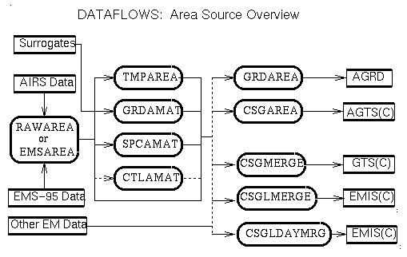
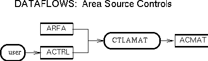
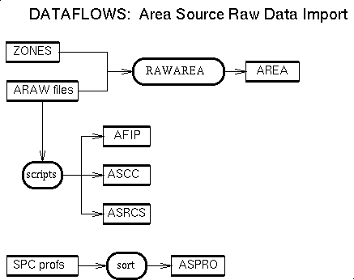
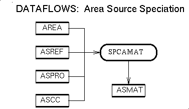
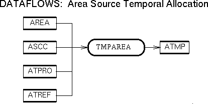

<!DOCTYPE HTML PUBLIC "-//IETF//DTD HTML//EN">
<HTML>
<HEAD>
<TITLE>
    Area Source Emissions
</TITLE>
</HEAD>

<BODY>
<H1>
    Area Source Emissions in SMOKE
</H1>

<H2> Contents </H2>
<UL>
    <LI>  <A HREF = "#overview"> Processing overview </A>
    <LI>  <A HREF = "#concepts"> Area-specific concepts</A>
    <LI>  <A HREF = "#dataflow"> Data flow</A>
        <UL>
            <LI>  <A HREF = "#data"> Data Preparation and Import </A>
            <LI>  <A HREF = "#temp"> Temporal Processing </A>
            <LI>  <A HREF = "#spec"> Speciation Matrix Construction </A>
            <LI>  <A HREF = "#grid"> Gridding Matrix Construction </A>
            <LI>  <A HREF = "#cntl"> Control Matrix Construction </A>
            <LI>  <A HREF = "#xfrm"> Data Transforms</A>
        </UL>
    <LI>  <A HREF = "#programs"> Program List </A>
    <LI>  <A HREF = "#dataset">  Area Source Data Set Definitions </A>
</UL>


<HR> 

<H2> <A NAME= "overview"> Processing overview </A> </H2>
<B>  <A NAME= "essence"> The Essence</A> </B> <br>
The essence of area source emissions processing in SMOKE is converting
inventory pollutant data for counties and source categories from an 
aggregated annual emissions value to hourly and gridded emissions of 
the chemical species used by an air quality model.  The SMOKE processing 
can be run with or without control strategies.  The system accepts the 
raw data in two input formats:  EPS2.0 and EMS-95, but there are some 
constraints and differences.

<P>
<B> <A NAME= "simple"> Least Complex</A> </B> <br>
Area sources are the least complex source  category, and they are therefore 
a good starting point for someone who is unfamiliar with the SMOKE system.

<P> 
<B><A NAME= "remainingSteps"> Remaining Steps</A> </B>
The remaining area source processing steps are speciation, temporal allocation,
projection, control, and gridding.  These are implemented using the standard
emissions cross-reference and profile approach in which each county and ASCT
code is indirectly assigned a profile number by using a cross-reference file. 
A given profile number is used to find the appropriate temporal profile,
speciation profile, etc., that transform the raw data using factors from the
profiles.

<P>

<HR> 

<H2> <A NAME= "concepts"> Area-specific concepts</A> </H2>

<B>  <A NAME= "sources"> Sources</A> </B><br> 

SMOKE area sources are defined by the following identifiers: State and county
FIPS code and ASCT code.


<P> 
<B>  <A NAME= "year2year"> Multiple year-to-year projections</A></B><br> 
SMOKE can combine raw data from different inventory years into a
single inventory.  The inventory year is stored as one of the records in the
SMOKE area source inventory file <A HREF= "#AREA"> AREA</A>.  The  data
from these different years can then be projected to the same year using the 
<A HREF= "#CTLAMAT"> CTLAMAT</A> projection and controls program.  Although
this program uses the EPS2.0-formatted  control file, the format of the
projection packet in this file has been modified so that the projection factors
are listed with the "from year" and the "to year".


<P>
<HR> 

<H2> <A NAME= "dataflow"> Dataflow</A> </H2>
<H3><A NAME= "Intro"> Introduction </A></H3>

The following <B>data flow diagram</B> provides a conceptual overview of
area-source processing stages.  (Details on the various items on the figure 
are given in the next section.)
<P>
<P>
(This diagram is available in the following formats: in
    <A HREF = "figs/AREA.ps">Postscript</A>, in
    <A HREF = "figs/AREA.gif">GIF</A>, in
    <A HREF = "figs/AREA.xbm">X bitmap</A>, and in
    <A HREF = "figs/AREA.jpg">JPEG</A>.  
    
<P> In addition, diagrams giving an 
    overview of the main line of SMOKE processing  and how area source
    processing fits into that whole are available for 
    <B>UAM</B> air quality modeling in
    <A HREF = "figs/OVERVIEW.UAM.ps">Postscript</A>, in
    <A HREF = "figs/OVERVIEW.UAM.gif">GIF</A>, in
    <A HREF = "figs/OVERVIEW.UAM.xbm">X bitmap</A>, and in
    <A HREF = "figs/OVERVIEW.UAM.jpg">JPEG</A>; 
    and also for <B>EDSS</B> air quality modeling in
    <A HREF = "figs/OVERVIEW.EDSS.ps">Postscript</A>, in
    <A HREF = "figs/OVERVIEW.EDSS.gif">GIF</A>, in
    <A HREF = "figs/OVERVIEW.EDSS.xbm">X bitmap</A>, and in
    <A HREF = "figs/OVERVIEW.EDSS.jpg">JPEG</A>.  Note that additional
    options for analysis and quality assurance processing are detailed
    in the diagrams on area source processing.
    <P> 

    As the figure above shows, many of the steps can be performed
    simultaneously, because they do not depend one another.  The <B> data
    preparation and import step</B> (RAWAREA, EMSAREA), must be performed
    first.  The subsequent steps of <B> temporal processing</B> (TMPAREA), <B>
    speciation matrix construction</B> (SPCAMAT), <B> gridding</B> (GRDAMAT),
    and <B> control and/or projection matrix contstruction</B> (CTLAMAT) can be
    performed in any order.  The <B> data transform step(s)</B> (CSGLMERGE,
    CSGLDAYMRG, CSGAREA, GRDAREA) must be performed last, or at least after the
    required matrices have been created.
    
    <P>
    In the figure, &quot;&quot;Other EM Data&quot;&quot; refers to the 
    emissions and matrices from point, mobile, and biogenic emissions 
    sources.  The dashed lines indicate optional steps.
    <P>
    
    <B> In the descriptions below, programs and file names that are in italics
    indicate optional steps or input/output files.</B>

<H3><A NAME= "data"> Data Preparation and Import </A></H3>

    The area source submodel of SMOKE accepts either the EPS2.0-formatted raw
    inputs, or EMS-95- formatted raw inputs.  However, for the EMS-95- format,
    the areatprl.ar file(s) is not used (only the area.ar file(s) are used).
    Using either format, multiple input files can be used (separated, for
    example, for different states), and multiple inventory years may also be
    used for each.
    <P> 
    
    <B>If the EPS2.0 input raw file format is used:</B>
    <B><A HREF= "#RAWAREA"> RAWAREA</A> program:</B> Reads in all of the
    EPS2.0-formatted raw data files.
    
    <UL>
    
    <LI>INPUTS:
        <UL>
        
        <LI> <A HREF= "#ANLST"> ANLST</A> (ASCII): Contains a list of
        all of the EPS2.0-formatted area source input files
        <LI> <A HREF = "MERGE.html#ZONES">ZONES</A> (ASCII): Time-zone 
        cross reference file (per state/county)
        <LI> <A HREF="MERGE.html#GRIDDESC"> GRIDDESC</A> (ASCII): 
        Parameters describing grid and grid projection (of Earth's 
        surface to the plane of the grid)

        </UL> 

        <LI>OUTPUTS:
        <UL>
        
        <LI> <A HREF= "#AREA"> AREA</A> (NetCDF): Sorted list of area 
             sources, called the "emissions source attributes database" 
             or the "SMOKE inventory" file.  This file contains the codes 
             (FIPS, ASC, etc.) identifying each source and the annual 
             inventory pollutant totals. It is used by the 
             <A HREF= "#GRDAMAT"> GRDAMAT</A>, 
             <A HREF= "#SPCAMAT"> SPCAMAT</A>, 
             <A HREF= "#TMPAREA"> TMPAREA</A>, and 
             <A HREF= "#CTLAMAT"> CTLAMAT</A> programs.  It is also
             potentially used by the 
             <A HREF= "QA.html#GRDAREA"> GRDAREA</A> and
             <A HREF= "QA.html#CSGAREA"> CSGAREA</A> programs.

        <LI> <A HREF= "#ASCS"> ASCS</A> (ASCII): Sorted list of ASC codes 
             appearing in the inventory.  It is used by the 
             <A HREF ="#TMPAREA"> TMPAREA</A>, 
             <A HREF="#SPCAMAT"> SPCAMAT</A>, and 
             <A HREF= "#GRDAMAT"> GRDAMAT</A> programs.

        </UL>
    </UL>
    <P> 

    <B>If the EMS-95 input raw file format is used:</B><BR>
    <B><A HREF= "#EMSAREA"> EMSAREA</A> program:</B> Reads in all of the
    EMS-95- formatted raw data files.
    
    <UL>
    
    <LI>INPUTS:
        <UL>
        
        <LI> <A HREF= "#ANLST"> ANLST</A> (ASCII): Contains a list of
             all of the EMS-95- formatted area source input files
        <LI> <A HREF = "MERGE.html#ZONES">ZONES</A> (ASCII): Time-zone
             cross reference file (per state/county)
        <LI> <A HREF="MERGE.html#GRIDDESC"> GRIDDESC</A> (ASCII): 
             Parameters describing grid and grid projection (of 
             Earth's surface to the plane of the grid)

        </UL> 
        
        <LI>OUTPUTS:
        <UL>
        
        <LI> <A HREF= "#AREA"> AREA</A> (NetCDF): Sorted list of area
             sources, called the "emissions source attributes database"
             or the "SMOKE inventory" file.  This file contains the 
             codes (FIPS, ASC, etc.) identifying each source and the 
             annual inventory pollutant totals. It is used by the 
             <A HREF= "#GRDAMAT"> GRDAMAT</A>, 
             <A HREF= "#SPCAMAT"> SPCAMAT</A>,
             <A HREF= "#TMPAREA"> TMPAREA</A>, and 
             <A HREF= "#CTLAMAT"> CTLAMAT</A> programs.  It is also
             potentially used by the 
             <A HREF= "QA.html#GRDAREA"> GRDAREA</A> and
             <A HREF= "QA.html#CSGAREA"> CSGAREA</A> programs
        <LI> <A HREF= "#ASCS"> ASCS</A> (ASCII): Sorted list of 
             ASC codes appearing in the inventory.  It is used by the 
             <A HREF ="#TMPAREA"> TMPAREA</A>, 
             <A HREF="#SPCAMAT"> SPCAMAT</A>, and 
             <A HREF= "#GRDAMAT"> GRDAMAT</A> programs

        </UL>
        
        <LI>  NOTES: <P> 
             If there are duplicate sources in the inventory, the user
             can set the program either to sum the duplicate sources or
             to disallow this case.  This feature is controlled with the
             RAW_DUP_CHECK environment variable, as described in the
             detailed description of the 
             <A HREF= "#EMSAREA">EMSAREA</A> program. 
    </UL>

    <B>Data flow diagrams</B> for the data preparation and 
    import of area source processing are available in 
    <A HREF = "figs/AREA.RAW.ps">Postscript</A>, in
    <A HREF = "figs/AREA.RAW.gif">GIF</A>, in
    <A HREF = "figs/AREA.RAW.xbm">X bitmap</A>, and in
    <A HREF = "figs/AREA.RAW.jpg">JPEG</A>.
    <P> 


<H3><A NAME= "temp"> Temporal Processing </A></H3>

    <B><A HREF = "#TMPAREA"> TMPAREA</A> program:</B>
    
    Creates the area source hourly inventory pollutant emissions
    file(s) by applying the monthly, weekly, and diurnal temporal profiles
    based on the inventory source characteristics and the cross-reference file.
      
    <UL> 
    <LI>INPUTS:
        <UL>
        <LI> <A HREF= "#AREA"> AREA</A> (NetCDF): SMOKE inventory file from
        the <A HREF= "#RAWAREA"> RAWAREA</A> or <A HREF= "#EMSAREA">
        EMSAREA</A> programs
        <LI> <A HREF= "#ASCS"> ASCS</A> (ASCII): Sorted list of ASC codes 
        appearing in the inventory from the <A HREF= "#RAWAREA">
        RAWAREA</A> or <A HREF= "#EMSAREA"> EMSAREA</A> programs
        <LI> <A HREF = "#ATPRO"> ATPRO</A> (ASCII): EPS2.0-formatted
        temporal profiles
        <LI> <A HREF = "#ATREF"> ATREF</A> (ASCII): EPS2.0-formatted
        temporal cross-reference
        </UL>

    <LI>OUTPUTS:
        <UL>
        <LI><A HREF = "#ATMP"> ATMP</A> (NetCDF): Hourly inventory
        pollutant emissions.  This file is used by the CSGMERGE, CSGLMERGE, or
        CSGLDAYMRG programs, and can optionally be used by the <EM>
        <A HREF= "QA.html#GRDAREA"> GRDAREA</A> </em> and
        <EM> <A HREF= "QA.html#CSGAREA"> CSGAREA</A> </em> programs
        </UL>

    <LI>NOTES:<P> 
        The temporal profiles are matched to the source-level emissions 
        using the cross-reference file.  The following source characteristics 
        are used to apply these profiles: State and County FIPS code and 
        10-digit ASC code, but <B>not</B> pollutant (as is in point sources).
        
        <P>
        TMPAREA also requires the starting date (format either YYYYDDD 
        or YYYYMMDD), starting time (format HHMMSS), and duration (hours)
        for the simulation.  The duration is <STRONG>not</STRONG> limited 
        to 24 hours.    
    </UL>
    
    <P>
    <B>Data flow diagrams</B> for temporal allocation are 
    available in 
    <A HREF = "figs/AREA.TMP.ps">Postscript</A>, in
    <A HREF = "figs/AREA.TMP.gif">GIF</A>, in
    <A HREF = "figs/AREA.TMP.xbm">X bitmap</A>, and in
    <A HREF = "figs/AREA.TMP.jpg">JPEG</A>.
    <P> 


<H3><A NAME= "spec"> Speciation Matrix Construction </A></H3>

    <B><A HREF = "#SPCAMAT"> SPCAMAT</A> program:</B> 
    
    creates the area-source speciation matrix used to transform each 
    inventory pollutant to its model species.
    
    <UL>
    <LI>INPUTS:
        <UL>
        <LI> <A HREF= "#AREA"> AREA</A> (NetCDF): SMOKE inventory file 
             from the <A HREF= "#RAWAREA"> RAWAREA</A> or 
             <A HREF= "#EMSAREA"> EMSAREA</A> programs
        <LI> <A HREF= "#ASCS"> ASCS</A> (ASCII): Sorted list of 
             ASC codes  appearing in the inventory from the 
             <A HREF= "#RAWAREA"> RAWAREA</A> or 
             <A HREF= "#EMSAREA"> EMSAREA</A> programs
        <LI> <A HREF="#ASPRO"> ASPRO</A> (ASCII): EPS2.0-formatted
             speciation profiles
        <LI> <A HREF ="#ASREF">ASREF</A> (ASCII): EPS2.0-formatted
             speciation cross-reference
        <LI> <A HREF="#ASCNV"> ASCNV</A> (ASCII): Volatile conversion
             factors (e.g., ROG to TOG)
        </UL>
    <LI>OUTPUTS:
        <UL>
        
        <LI> <A HREF = "#ASMAT"> ASMAT</A> (NetCDF): Speciation matrix, 
             used by  <A HREF = "MERGE.html#CSGMERGE"> CSGMERGE</A>,
             <A HREF = "MERGE.html#CSGLMERGE"> CSGLMERGE</A>, 
             <A HREF= "MERGE.html#CSGLDAYMRG"> CSGLDAYMRG</A>, and 
             optionally by <EM><A HREF="QA.html#CSGAREA"> CSGAREA</A> </EM>.
        
        
        </UL>
    <LI>NOTES:
         <P>

        The speciation profiles are matched to the source- level emissions
        using the cross-reference file.  The following source characteristics
        are used to apply these profiles: State and County FIPS code and
        10-digit ASC code.  The cross-reference can
        be created to apply profiles using defaults at either of these levels
        or using State defaults.
        <P>
             
        The volatile conversion factors are used only if the speciation
        profiles for the volatile inventory pollutant are for a pollutant other
        than the that in the inventory.  The need for this file is determined
        at run time automatically by the program.  The volatile pollutant that
        the program will expect on input is determined at compile time by the
        CHDIMS3.EXT include file.
    </UL>

    <B>Data flow diagrams</B> for speciation matrix construction 
    are available in 
    <A HREF = "figs/AREA.SPC.ps">Postscript</A>, in
    <A HREF = "figs/AREA.SPC.gif">GIF</A>, in
    <A HREF = "figs/AREA.SPC.xbm">X bitmap</A>, and in
    <A HREF = "figs/AREA.SPC.jpg">JPEG</A>.
    <P> 


<H3><A NAME= "grid"> Gridding Matrix Construction </A></H3>

    <B><A HREF = "#GRDAMAT"> GRDAMAT</A> program:</B> 
    
    Creates the area-source gridding matrix used to transform source- based
    emissions to gridded output.
    
    <UL>
    <LI>INPUTS:
        <UL>
        <LI>  <A HREF= "#AREA"> AREA</A> (NetCDF): SMOKE inventory file 
              from the <A HREF= "#RAWAREA"> RAWAREA</A> or 
              <A HREF= "#EMSAREA">EMSAREA</A> programs
        <LI>  <A HREF= "#ASCS"> ASCS</A> (ASCII): Sorted list of ASC codes
              appearing in the inventory from the 
              <A HREF= "#RAWAREA">RAWAREA</A> or 
              <A HREF= "#EMSAREA"> EMSAREA</A> programs
        <LI>  <A HREF="MERGE.html#GRIDDESC"> GRIDDESC</A> (ASCII): 
              Parameters describing grid and grid projection (of Earth's 
              surface relative to the plane of the grid)
        <LI>  <A HREF="#AGPRO"> AGPRO</A> (ASCII): EPS2.0-formatted
              or "EMS-95"- formatted surrogates
        <LI>  <A HREF ="#AGREF">AGREF</A> (ASCII): EPS2.0-formatted
              or "EMS-95"- formatted surrogate cross-reference
        </UL>
     <LI>OUTPUTS:
        <UL>
        <LI>  <A HREF= "#AGMAT"> AGMAT</A> (NetCDF): Gridding matrix, used
              by <A HREF= "MERGE.html#CSGMERGE">CSGMERGE</A>, and/or 
              <A HREF= "MERGE.html#CSGLMERGE"> CSGLMERGE</A>, and/or 
              <A HREF= "MERGE.html#CSGLDAYMRG">CSGLDAYMRG</A>, and 
              optionally by the <EM> <A HREF= "QA.html#GRDAREA"> GRDAREA</A> 
              </EM> and <EM> <A HREF= "QA.html#CSGAREA"> CSGAREA</A> </EM> 
              programs
        </UL>
     <LI>NOTES:
        <P>
        The gridding surrogates are matched to the source- level emissions
        using the cross-reference file.  The following source characteristics
        are used to apply these profiles: State and County FIPS code and
        10-digit ASC code.  The cross-reference can
        be created to apply profiles using defaults at either of these levels
        or using State defaults.
        
        <P>
        For the formats of AGPRO and AGREF, the "EMS-95" format is in quotes
        because the actual format is a SAS data set.  The format that SMOKE
        reads in is an ASCII file derived from this format, but is not the
        actual file format. For more information on the actual formats, please
        refer to the sections devoted specifically to  <A HREF="#AGPRO"> 
        AGPRO</A> and <A HREF ="#AGREF">AGREF</A>.
        
        <P> 
        GRDAMAT has the <B>option to run without generating output</B>
        files, to determine the dimensioning constants appropriate for the 
        grid being studied.  To exercise this option, enter &quot;NONE&quot; 
        in response to the prompt for the output gridding matrix file logical
        name.
     </UL>
     <P> 

     <B>Data flow diagrams</B> for gridding matrix 
     construction are available in 
     <A HREF = "figs/AREA.GRD.ps">Postscript</A>, in
     <A HREF = "figs/AREA.GRD.gif">GIF</A>, in
     <A HREF = "figs/AREA.GRD.xbm">X bitmap</A>, and in
     <A HREF = "figs/AREA.GRD.jpg">JPEG</A>.
     <P> 


<H3><A NAME= "cntl"> Control Matrix Construction </A></H3>

    <B><A HREF = "#CTLAMAT"> CTLAMAT</A> program:</B> 
    
    Creates the area-source control and projection matrix (or matrices)
    
    <UL>
    <LI>INPUTS:
        <UL>
        <LI>  <A HREF= "#AREA"> AREA</A> (NetCDF): SMOKE inventory file from
        the <A HREF= "#RAWAREA"> RAWAREA</A> or <A HREF= "#EMSAREA">
        EMSAREA</A> programs
        <LI>  <A HREF = "#ACTRL"> ACTRL</A> (ASCII):  EPS2.0-formatted
        control factors input file
        <LI>  <EM><A HREF = "#ACTRACK"> ACTRACK</A></em> (ASCII): Optional 
        list of sources for which control application tracking will be performed
        </UL>
    <LI>OUTPUTS:
        <UL>
        
        <LI> <A HREF = "#ACMAT"> ACMAT</A> (NetCDF): Control and Projection
        matrix, used by  <A HREF= "MERGE.html#CSGMERGE"> CSGMERGE</A>, and/or <a
        href= "MERGE.html#CSGLMERGE"> CSGLMERGE</A>, and/or <A HREF=
        "MERGE.html#CSGLDAYMRG"> CSGLDAYMRG</A>, and optionally by  <EM><a
        href="QA.html#CSGAREA"> CSGAREA</A> </em>
        <LI> <EM> <A HREF = "#ACREPT"> ACREPT</A></em> (ASCII): Optional
        output report of controls applied for sources listed in  <EM><A HREF =
        "#ACTRACK"> ACTRACK</A></em> file, or for all sources
        
        </UL>
    <LI>NOTE:
        <P>
        How specifically a given control can be applied to a source depends on
        the control packet being used.  The rules for this follow those of the
        EPS2.0 control packets, and refer to the EPS2.0 documentation for more
        information.  The projection factors can be applied by year,
        State and County FIPS code, 10-digit ASC code, or 4-digit ASC code 
        (first four digits).
        
        <P>
        Only a subset of the EPS2.0 list of control packets is supported; the
        list of unsupported packet types is documented in the section on<A HREF
        = "EPSDIFS.html#controls"> Differences with EPS2.0</A>.  In addition,
        the projection packet has been modified to permit multiple
        inventory-year to model-year projections.  For example, an inventory
        using 1988 and 1990 data in the same file could be projected to 1995
        with only one data-import step and one projection step.  This format is
        described in the section devoted to <A HREF = "#ACTRL"> ACTRL</A>.
    
        <P>
        If this program is used twice, and the  <A HREF = "#ACTRL">
        ACTRL</A> input files created correctly, this program can be used to
        create individual control and projection matrices, instead of a single
        control and projection matrix.
    </UL>

    <P> 
    <B>Data flow diagrams</B> for control matrix construction 
    are available in 
    <A HREF = "figs/AREA.CTL.ps">Postscript</A>, in
    <A HREF = "figs/AREA.CTL.gif">GIF</A>, in
    <A HREF = "figs/AREA.CTL.xbm">X bitmap</A>, and in
    <A HREF = "figs/AREA.CTL.jpg">JPEG</A>.
    <P> 


<H3><A NAME= "xfrm"> 
Data Transform </A></H3>

    Data transforms are made by combining the inventory pollutant emissions
    (from <A HREF= "#AREA"> AREA</A>) or the hourly pollutant emissions
    (from <A HREF= "#ATMP"> ATMP</A>) with the various matrices.  Several
    different types of these transforms are possible, for air-quality model
    input preparation, analysis, or visualization.  Please refer to the section
    on <A HREF="MERGE.html"> MERGE PROCESSING</A> for the detailed input and
    output file lists.
    
    <P>
    <B>Three-dimensional air quality modeling inputs merged with other source
    types</B>

    The <A HREF = "MERGE.html#CSGLMERGE"> CSGLMERGE</A> and <A HREF =
    "MERGE.html#CSGLDAYMRG"> CSGLDAYMRG</A> programs are used to build
    three-dimensional air quality modeling inputs, appropriate for use in <a
    href= "http://www.iceis.mcnc.org/EDSS/EDSSPage.html#MAQSIP"> MAQSIP</A> or SAQM.   These program read
    all of the component files from the area, point, mobile, and biogenics
    processing stages, and create a single merged output file, <B>EMIS3D</B> or
    <B> EMISC3D</B>. 
    The utility program <A HREF= "MERGE.html#SMK2SAQM"> SMK2SAQM</A> must be used to
    convert the three-dimensional output file to the format expected by the
    SAQM model.
    
    <P>
    The <B>EMIS3D</B> file can be read by the <A HREF="http://www.iceis.mcnc.org/EDSS/pave_doc/Pave.html"> PAVE</A>
    visualization package, but the SAQM file cannot.
    
    <P> <B>Two-dimensional air quality modeling inputs merged with other source
    types (UAM)</B>
  
    The <A HREF = "MERGE.html#CSGMERGE"> CSGMERGE</A> program is similar to the
    programs just described for three-dimensional output, but produces a
    two-dimension (single-layer) emissions output file.  This program reads all of
    the component files from the area, point, mobile, and biogenics processing
    stages, and creates a single merged output file, <B>EMIS2D</B> or
    <B>EMISC2D</B>. This
    program is used for UAM-style processing, which separates the air quality
    emissions input files into two files: an elevated and a non-elevated file. 
    The <A HREF = "MERGE.html#CSGMERGE"> CSGMERGE</A> program creates the
    non-elevated file.  In order to convert the <B>EMIS2D</B> file to the
    'EMISSIONS' file format expected by the UAM, the <A HREF= "MERGE.html#SMK2EMIS">
    SMK2EMIS</A> utility routine must be used. For more information, refer to
    the documentation for the individual programs and for <A HREF =
    "MERGE.html"> merge</A> processing.
  
    <P> The <B>EMIS2D</B> file can be read by the <A HREF=
    "http://www.iceis.mcnc.org/EDSS/pave_doc/Pave.html"> PAVE</A> visualization package, as can the output
    from <A HREF= "MERGE.html#SMK2EMIS"> SMK2EMIS</A>
      
    <P>
    <B>Two-dimensional gridded, (hourly), model species emissions</B>

    The <A HREF = "QA.html#CSGAREA"> CSGAREA</A> program can be used to generate
    a gridded, model species, optionally hourly, and optionally controlled,
    area-source-only emissions files.   The program reads either the
    inventory file <A HREF= "#AREA"> AREA</A> or the hourly inventory
    pollutants file <A HREF= "#ATMP"> ATMP</A>, the gridding matrix <a
    href= "#AGMAT"> AGMAT</A>, the speciation matrix <A HREF= "#ASMAT">
    ASMAT</A>, and optionally the control matrix <A HREF= "#ACMAT">
    ACMAT</A>.  The outputs from this program can be useful for both analysis
    and quality assurance purposes, but they are not essential to preparing
    emissions inputs for air quality modeling.  Depending on the input files,
    this progam outputs the following files:

       <UL>
       <LI> <B>AGS:</B>  Gridded model species</li>
       <LI> <B>AGTS:</B> Gridded, hourly, model species</li>
       <LI> <B>AGSC:</B> Gridded, controlled model species</li>
       <LI> <B>AGTSC:</B>Gridded, hourly, controlled model species</li>
       </UL>
    
    These files can be read by the <A HREF="http://www.iceis.mcnc.org/EDSS/pave_doc/Pave.html"> PAVE</A>
    visualization package.

    <P>
    <B>Gridded, (hourly) inventory pollutant emissions</B>

    The <A HREF = "QA.html#GRDAREA">GRDAREA</A> program can be used to
    a gridded, optionally hourly, inventory pollutant area-source-only
    emissions files.  The program reads either the inventory file <A HREF=
    "#AREA"> AREA</A> or the hourly inventory pollutants file <A HREF=
    "#ATMP"> ATMP</A>, and the gridding matrix <A HREF= "#AGMAT">
    AGMAT</A>.  The outputs from this program can be useful for both analysis
    and quality assurance purposes, but they are not essential to preparing
    emissions inputs for air quality modeling.  Depending on the input files,
    this progam outputs the following files:
    
       <UL>
       <LI> <B>AGRD:</B> Gridded inventory pollutants</li>
       <LI> <B>AGRT:</B> Gridded, hourly, inventory polluntants</li>
       </UL>    
       
    These files can be read by the <A HREF="http://www.iceis.mcnc.org/EDSS/pave_doc/Pave.html"> PAVE</A>
    visualization package.
    
     <P> 

    <B>Data flow diagrams</B> describing other aspects of
    area source processing (such as the application of various
    combinations of transform matrices for analysis and quality
    assurance are available in 
    <A HREF = "figs/AREA.OTHER.ps">Postscript</A>, in
    <A HREF = "figs/AREA.OTHER.gif">GIF</A>, in
    <A HREF = "figs/AREA.OTHER.xbm">X bitmap</A>, and in
    <A HREF = "figs/AREA.OTHER.jpg">JPEG</A>.

<P>
<HR> 

<H2> <A NAME= "programs"> Area Source Programs</A> </H2>

<UL> 
    <LI> <B>Primary Programs:</B>

    <UL>

        <LI>  <B><A HREF = "#CTLAMAT">  CTLAMAT</A></B>:  Creates the
        area-source control and projection matrix (or matrices)

        <LI> <B><A HREF = "#EMSAREA"> EMSAREA</A></B>: Reads in all of the
        EMS-95- formatted raw data files

        <LI>  <B><A HREF = "#GRDAMAT">  GRDAMAT</A></B>:   Creates
        the area-source gridding matrix used to transform source- based
        emissions to gridded output

        <LI>  <B><A HREF = "#RAWAREA">  RAWAREA</A></B>:  Reads in
        all of the EPS2.0-formatted raw data files
              
        <LI>  <B><A HREF = "#SPCAMAT">  SPCAMAT</A></B>:  Creates the
        area-source speciation matrix used to transform each inventory
        pollutant to its model species

        <LI>  <B><A HREF = "#TMPAREA">  TMPAREA</A></B>:  Creates the
        area source hourly inventory pollutant emissions file(s) by applying
        the monthly, weekly, and diurnal temporal profiles based on the
        inventory source characteristics and the cross-reference file

    </UL>

    <LI> <B>Quality Assurance Programs (also see Quality Assurance section):</B>
    <UL>

        <LI>  <B><A HREF = "QA.html#CSGAREA"> 
              CSGAREA</A></B>:  construct area source
              gridded speciated (optionally) controlled 
              model emissions file <A HREF = "MERGE.html#AGTS"> AGTS</A>
    </UL>
    <LI> <B>Related Merge Programs (also see Merge section):</B>
    <LI> <B>Utilities and Preprocessors (also see Utilities section):</B>
</UL>


<HR>
<H2> <A NAME="CTLAMAT">CTLAMAT </A></H2>

<TABLE>
<TR>
<TD><A HREF = "#CTLAMAT_DESC"> Description</A>
<TD><A HREF = "#CTLAMAT_PRORD"> Processing Order</A>
<TD><A HREF = "#CTLAMAT_INFIL"> Input Files</A>
<TD><A HREF = "#CTLAMAT_INPAR"> Input Params</A>
<TD><A HREF = "#CTLAMAT_INENV"> Input Envt Vars</A>
<TR>
<TD><A HREF = "#CTLAMAT_OUTFIL"> Output Files</A>
<TD><A HREF = "#CTLAMAT_INCL"> Include File Params</A>
<TD><A HREF = "#CTLAMAT_UPCOM"> Upcoming Features</A>
<TD><A HREF = "#CTLAMAT_BUGS"> Known Bugs</A>
<TD><A HREF = "#CTLAMAT_USAGE"> Usage</A>
</TABLE>

<H3><A NAME = "CTLAMAT_DESC"> Description</A> </H3>

    <B>Overview.</B> The program CTLAMAT uses EPS2.0 control factors files to
    construct an area source control matrix.  It can be used to create a
    projection matrix, a control matrix, or a combination of projection and
    controls.  At the current time, the merge processing steps do not use more
    than one control matrix, so all projections and controls for a given
    scenario must be put into this single matrix.<P>

    <B>Control Packets.</B> There are significant differences between CTLAMAT
    and the UAM EPS2.0 CNTLEM program in what types of control packets are
    supported and to some extent how the controls are interpreted.  These
    differences are documented in the section on <A HREF =
    "EPSDIFS.html#control"> differences between SMOKE and EPS2.0.</A> <P>
    
    <B>Multiple year to year projections.</B> In addition to the /PROJECT AMS/
    packet support by EPS2.0, SMOKE can use a 
    /PROJECT AMS &lt;inventory year&gt; &lt;destination year&gt;/ packet.  
    This packet is needed if the <A HREF= "#AREA">AREA</A> inventory file 
    has inventory records from more than one year. Using a series of these 
    packets, inventory records from different inventory years can be 
    projected to a single modeling year.<P>

<H3><A NAME = "CTLAMAT_PRORD"> Processing Order</A></H3>

    The CLTAMAT program must be run after <A HREF= "#RAWAREA"> RAWAREA</A> or
    <A HREF= "#EMSAREA"> EMSAREA</A>. The following <B>data flow diagram</B>
    provides a conceptual overview of using CTLAMAT. <P>

    <P>

    A similar diagram is also available in 
    <A HREF = "figs/AREA.CTL.ps">Postscript</A>, in
    <A HREF = "figs/AREA.CTL.gif">GIF</A>, in
    <A HREF = "figs/AREA.CTL.xbm">X bitmap</A>, and in
    <A HREF = "figs/AREA.CTL.jpg">JPEG</A>.
    <P> 

<H3><A NAME = "CTLAMAT_INFIL"> Input Files</A> </H3>
        <UL>
        <LI> <A HREF= "#AREA"> AREA</A> (NetCDF): SMOKE inventory file from
        the <A HREF= "#RAWAREA"> RAWAREA</A> or <A HREF= "#EMSAREA">
        EMSAREA</A> programs
        <LI> <A HREF= "#ACTRL"> ACTRL</A> (ASCII): EPS2.0-formatted control
        and projection packets 
        <LI> <EM><A HREF="#ACTRACK"> ACTRACK</A></em> (ASCII): List of sources
        for generating controls report
        </UL>

<H3><A NAME = "CTLAMAT_INPAR"> Input Parameters</A> </H3>
    <UL> <LI>NONE 
    </UL>

<H3><A NAME = "CTLAMAT_INENV"> Input Environment Variables</A> </H3>
     <UL>
     <LI> <B>LOGFILE</B>: If this environment variable is defined as a valid
     physical file name, the program's         
     errors, warnings, notes, and other information will be recorded in this
     file. Otherwise, that information will be written to standard output.<P>
     </UL>
     
<H3><A NAME = "CTLAMAT_OUTFIL"> Output Files</A> </H3>
        <UL>
        <LI> <A HREF= "#ACMAT"> ACMAT</A> (NetCDF): Control and/or projection
        matrix, used by  <A HREF= "MERGE.html#CSGMERGE">CSGMERGE</A>, 
        and/or <A HREF= "MERGE.html#CSGLMERGE">CSGLMERGE</A>, and/or 
        <A HREF= "MERGE.html#CSGLDAYMRG"> CSGLDAYMRG</A>, and optionally 
        by the <EM> <A HREF= "QA.html#CSGAREA">CSGAREA</A> </em> program
        <LI> <EM><A HREF= "#ACREPT">ACREPT</A></EM> (ASCII): Describes types
        of controls applied
        </UL>

<H3><A NAME = "CTLAMAT_INCL"> Include file parameters</A> </H3>
The following include files are used by CTLAMAT.  In this section, we highlight
included parameters that users may need to modify to suit their particular
simulation needs for this program, and these are listed in alphabetical order
for each  include file. The include files are listed in the order that they
appear in the source code. Refer to the section on <A HREF= "INCLUDES.html">
include files</A> for specific details about the parameters.

    <UL> 
    <LI> <A HREF= "INCLUDES.html#ardims"> ARDIMS3.EXT</A>: area-source
    dimensioning parameters
       <UL>
       <LI> <B>NAFIP</B>: Maximum number of FIPS codes
       <LI> <B>NASID</B>: Maximum number of state IDs
       <LI> <B>NASRC</B>: Number of area sources
       </UL>
    <LI> <A HREF= "INCLUDES.html#chdims"> CHDIMS3.EXT</A>: non-generalized 
        speciation parameters
       <UL>
       <LI> <B>NIPOL</B>: Number of inventory pollutants
       </UL>
    <LI> <A HREF= "INCLUDES.html#parms3"> PARMS3.EXT</A>:  
           I/O API parameters
    <LI> <A HREF= "INCLUDES.html#iodecl3"> IODECL3.EXT</A>: 
           I/O API function declarations
    <LI> <A HREF= "INCLUDES.html#fdesc3"> FDESC3.EXT</A>:  
           I/O API file description data structures.
    <LI>Parameter in CTLAMAT source code (ctlamat.F): 
       <UL>
       <LI> <B>MAXPKT</B>: Maximum number of control packets
       </UL>
    </UL>
    
<H3><A NAME = "CTLAMAT_UPCOM"> Upcoming Features </A> </H3>
    <UL>
    <LI>Additional types of controls
    <LI>Run-time variable dimensioning
    </UL>
    
<H3><A NAME = "CTLAMAT_BUGS"> Known Bugs</A> </H3>
    <UL> 
        <LI> No bugs known at this time
    </UL>

<H3><A NAME = "CTLAMAT_USAGE"> Usage</A></H3>

    The script below runs CTLAMAT; with tracking turned on:
    the program reports control applicability in priority order from
    lowest priority to hightest priority, for the list of sources
    described in the TRACK file.
<P>
<PRE>
#
#  setenvs for logical file names:
#
setenv AREA  &lt;path-name for area source file&gt;
setenv ACTRL &lt;path-name for control file&gt;
setenv ACREPT &lt;path-name for control-reports file&gt;
setenv ACTRACK &lt;path-name for tracking-list file&gt;
setenv ACMAT &lt;path-name for control matrix file&gt;
#
#  Now run the program, with reports on the sources listed
#  in file TRACK, using a here-document for input:
#
ctlamat &lt;&lt; EOF
Yes, continue with the program
AREA                    !  area source input file logical name
ACTRL                   !  control input file
ACREPT                  !  control-report  output file or &quot;NONE&quot;
ACTRACK                 !  tracked-sources input file, or &quot;ALL&quot;
ACMAT                   !  control matrix output file
EOF
#
</PRE>
    Alternatively, the script below runs &quot;ctlamat&quot; with
    tracking turned off.
<P>
<PRE>
#
#  setenvs for logical file names:
#
setenv AREA  &lt;path-name for area source file&gt;
setenv ACTRL &lt;path-name for control file&gt;
setenv ACMAT &lt;path-name for control matrix file&gt;
#
#  run the program with tracking/reporting turned off:
#
ctlamat &lt;&lt; EOF
Yes, continue with the program
AREA                    !  area source input file logical name
ACTRL                   !  control input file
NONE                    !  &quot;NONE&quot; for control-report file name
ACMAT                   !  control matrix output file
EOF
</PRE>
    

<HR>
<H2> <A NAME="EMSAREA">EMSAREA </A></H2>

<TABLE>
<TR>
<TD><A HREF = "#EMSAREA_DESC"> Description</A>
<TD><A HREF = "#EMSAREA_PRORD"> Processing Order</A>
<TD><A HREF = "#EMSAREA_INFIL"> Input Files</A>
<TD><A HREF = "#EMSAREA_INPAR"> Input Params</A>
<TD><A HREF = "#EMSAREA_INENV"> Input Envt Vars</A>
<TR>
<TD><A HREF = "#EMSAREA_OUTFIL"> Output Files</A>
<TD><A HREF = "#EMSAREA_INCL"> Include File Params</A>
<TD><A HREF = "#EMSAREA_UPCOM"> Upcoming Features</A>
<TD><A HREF = "#EMSAREA_BUGS"> Known Bugs</A>
<TD><A HREF = "#EMSAREA_USAGE"> Usage</A>
</TABLE>

<H3><A NAME = "EMSAREA_DESC"> Description</A> </H3>

    <B>Overview</B> Program EMSAREA inputs EMS-95- formatted area
    source inventory emissions files and creates a sorted list of area sources,
    called the "emissions source attributes database" or the "SMOKE inventory"
    file.  Each entry in this file is an <A HREF= "#sources"> area source</A>,
    and has associated emissions.<P>
    
    <B> Multiple input files.</B> The program can read source data from many
    individual emissions inventory files by using a special input file, <a
    href= "#ANLST"> ANLST</A>.  This file is also used to set the inventory
    year for each of the individual input files (see section on ANLST for more
    information). SMOKE also permits data multiple inventory years to be in the
    same SMOKE inventory file, because the projection step permits the user to
    project from multiple inventory years to a single modeling year with the
    same projection matrix.<P>
    
    <B>Input format.</B> The program reads in the <B> area.ar</B> files from
    EMS-95, but does not read in the areatprl.ar files. <P>
    
    <B>Number of sources.</B> If the program has not been compiled for the
    correct number of area sources, NASRC (see include parameters section
    below), then it will count the correct number of sources to use, and
    report this number. No output file will be written.  All area source
    programs should be recompiled when the number of sources is changed in the
    include file.<P>

<H3><A NAME = "EMSAREA_PRORD"> Processing Order</A></H3>

    The program EMSAREA needs only to be run if the user is starting with
    EMS-95- formatted emissions data, and in this case, EMSAREA must be run
    first.  The following <B>data flow diagram</B> provides a conceptual
    overview of using EMSAREA. <P>

    <P>

    A similar diagram is available in  
    <A HREF = "AREA.EMS.ps">Postscript</A>, in
    <A HREF = "AREA.EMS.gif">GIF</A>, in
    <A HREF = "AREA.EMS.xbm">X bitmap</A>, and in
    <A HREF = "AREA.EMS.jpg">JPEG</A>.
    <P> 

<H3><A NAME = "EMSAREA_INFIL"> Input Files</A> </H3>

        <UL>
        
        <LI> <A HREF= "#ANLST"> ANLST</A> (ASCII): Contains a list of 
              all of the EMS-95- formatted area source input files
        <LI> <A HREF = "MERGE.html#ZONES">ZONES</A> (ASCII): Time-zone 
              cross reference file (per state/county)
        <LI> <A HREF="MERGE.html#GRIDDESC"> GRIDDESC</A> (ASCII): 
              Parameters describing grid and grid projection (of 
              Earth's surface to the plane of the grid)

        </UL>
        
<H3><A NAME = "EMSAREA_INPAR"> Input Parameters</A> </H3>
        <UL> 
            <LI>  None
        </UL>
        
<H3><A NAME = "EMSAREA_INENV"> Input Environment Variables </A></H3>
     <UL>
     <LI> <B>RAW_MISS_CHECK</B>: This variable has two settings:
         <UL>
         <LI> <B>Y</B>: Report sources that do not emit all inventory 
              pollutants 
         <LI> <B>N</B>: (Default) Do not report sources that a do not 
              emit all inventory pollutants
         </UL>
     <LI> <B>RAW_DUP_CHECK</B>: This variable has two settings:
         <UL>
         <LI> <B>Y</B>: Disallow duplicate area sources from the inventory.
              The program will report all such cases and abort, but not 
              write out any output files.
         
         <LI> <B>N</B>: (Default) Allow duplicate area sources to be in 
              the inventory.  When duplicate sources area encountered 
              during processing, sum the emissions from all entries to 
              a single source.
         </UL>
         
     <LI> <B>LOGFILE</B>: If this environment variable is defined as a 
              valid physical file name, the program's errors, warnings, 
              notes, and other information will be recorded in this
              file. Otherwise, that information will be written to 
              standard output.
     </UL>

<H3><A NAME = "EMSAREA_OUTFIL"> Output Files</A> </H3>
        <UL>
        
        <LI> <A HREF= "#AREA"> AREA</A> (NetCDF): Sorted list of area
             sources, called the "emissions source attributes database" 
             or the "SMOKE inventory" file.  This file contains the codes 
             (FIPS, ASC, etc.) identifying each source and the annual 
             inventory pollutant totals. It is used by the 
             <A HREF= "#GRDAMAT"> GRDAMAT</A>, 
             <A HREF= "#SPCAMAT">SPCAMAT</A>,  
             <A HREF= "#TMPAREA">TMPAREA</A>, and 
             <A HREF= "#CTLAMAT"> CTLAMAT</A> programs.  It is also
             potentially used by the <A HREF= "QA.html#GRDAREA">GRDAREA</A> 
             and <A HREF= "QA.html#CSGAREA">CSGAREA</A> programs
        <LI> <A HREF= "#ASCS"> ASCS</A> (ASCII): Sorted list of ASC codes 
             appearing in the inventory.  It is used by the 
             <A HREF="#TMPAREA">TMPAREA</A>, 
             <A HREF="#SPCAMAT">SPCAMAT</A>, and 
             <A HREF= "#GRDAMAT"> GRDAMAT</A> programs

        </UL>

<H3><A NAME = "EMSAREA_INCL"> Include file parameters</A> </H3>
The following include files are used by EMSAREA.  In this section, we highlight
included parameters that users may need to modify to suit their particular
simulation needs for this program, and these are listed in alphabetical order
for each  include file. The include files are listed in the order that they
appear in the source code. Refer to the section on <A HREF= "INCLUDES.html">
include files</A> for specific details about the parameters.

    <UL> 
    <LI> <A HREF= "INCLUDES.html#ardims"> ARDIMS3.EXT</A>: area- source
    dimensioning parameters
       <UL>
       <LI> <B>NAFIP</B>: Maximum number of FIPS codes
       <LI> <B>NASID</B>: Maximum number of state IDs
       <LI> <B>NASRC</B>: Number of area sources
       </UL>
    <LI> <A HREF= "INCLUDES.html#chdims"> CHDIMS3.EXT</A>: non- generalized 
        speciation parameters
       <UL>
       <LI> <B>NIPOL</B>: Number of inventory pollutants
       </UL>
    <LI> <A HREF= "INCLUDES.html#grdims"> GRDIMS3.EXT</A>: 
         grid parameters
    <LI> <A HREF= "INCLUDES.html#tmdims"> TMDIMS3.EXT</A>: 
         Temporal allocation dimensioning parameters    
    <LI> <A HREF= "INCLUDES.html#parms3"> PARMS3.EXT</A>:  
         I/O API parameters
    <LI> <A HREF= "INCLUDES.html#iodecl3"> IODECL3.EXT</A>: 
         I/O API function declarations
    <LI> <A HREF= "INCLUDES.html#fdesc3"> FDESC3.EXT</A>:  
         I/O API file description data structures.
    </UL>
    
<H3><A NAME = "EMSAREA_UPCOM"> Upcoming Features</A> </H3>
    <UL>
    <LI>Run-time variable dimensioning
    </UL>
        
<H3><A NAME = "EMSAREA_BUGS"> Known Bugs</A> </H3>
    <UL> <LI>No bugs known at this time
    </UL>
    
<H3><A NAME = "EMSAREA_USAGE"> Usage</A></H3>

<PRE>
#
#   set up environment variables (logical names) of input files:
#
setenv ZONES    &lt;path-name for FIPS-to-time-zone file&gt;
setenv ANLST    &lt;path-name for list of EMS-95 input files&gt;
setenv ASCS     &lt;path-name for list of unique ASCT codes in inventory&gt;
setenv AREA     &lt;path-name for SMOKE area source file&gt;
#
# now run the program, using a here-document to supply the input:
#
emsarea &lt;&lt;  EOF
Yes, continue with the program
ZONES                   ! FIPS-to-time-zone file                    
ANLST                   ! List of EMS-95 input files
ASCS                    ! Output list of unique ASCT codes in inventory
AREA                    ! Output SMOKE area source inventory file
EOF
#
</PRE><P> 


<HR>
   
<H2> <A NAME="GRDAMAT">GRDAMAT </A></H2>

<TABLE>
<TR>
    <TD><A HREF = "#GRDAMAT_DESC"> Description</A>
    <TD><A HREF = "#GRDAMAT_PRORD"> Processing Order</A>
    <TD><A HREF = "#GRDAMAT_INFIL"> Input Files</A>
    <TD><A HREF = "#GRDAMAT_INPAR"> Input Params</A>
    <TD><A HREF = "#GRDAMAT_INENV"> Input Envt Vars</A>
<TR>
    <TD><A HREF = "#GRDAMAT_OUTFIL"> Output Files</A>
    <TD><A HREF = "#GRDAMAT_INCL"> Include File Params</A>
    <TD><A HREF = "#GRDAMAT_UPCOM"> Upcoming Features</A>
    <TD><A HREF = "#GRDAMAT_BUGS"> Known Bugs</A>
    <TD><A HREF = "#GRDAMAT_USAGE"> Usage</A>
</TABLE>

<H3><A NAME = "GRDAMAT_DESC"> Description</A> </H3>
    
    <B>Overview.</B> The GRDAMAT program constructs a gridding matrix, which is
    used to transform source-based records to gridded records.  This program
    also reports the total number of coefficients in the gridding 
    transform matrix, and the maximum, minimum, and mean numbers of
    sources per cell.  It can be run with output file logical name set
    to &quot;NONE&quot;, in order to find out the maximum number, for
    use in dimensioning the work arrays  used internally for computing 
    the gridding matrix. <P>
    
    <B>Gridding surrogates.</B> All sources are allocated to grid cells based
    on gridding surrogates.  These surrogates are factors that indicate the
    fraction of a source (county) that should be allocated to each grid cell
    that intersects that source. There are many difference types of surogates.
     The most simple is the "area" surrogate, which is simply the fraction of the
    are from each county that intersects with the grid cells overlapping that
    county. Other surrogates commonly used for area emissions processing are
    the "population" surrogate and the "housing" surrogate. As is described in
    more detail in the <A HREF= "#AGPRO"> AGPRO</A> section, GRDAMAT can
    accept surrogates in several formats.<P>
    
    <B>Gridding cross-reference usage.</B> The gridding cross-reference file
    describes which gridding surrogates are to be used for specific sources or
    types of sources.  GRDAMAT permits the assigning of surrogates to sources
    based on the state and county FIPS code and the ASCT code. A hierarchical
    system is used to apply the surrogates in which the most specific
    assignments are applied first, followed by the next most specific, etc. For
    area sources, the gridding surrogates can be applied based on state and
    county FIPS code, the 10-digit ASCT code.
    For example, the cross-reference file could have a default set for all
    counties and ASCT codes to use population as a surrogate, but specific
    ASCTs to use the housing surrogate. As is described in more detail in the
    <A HREF= "#AGREF"> AGREF</A> section, GRDAMAT can accept the cross-
    reference file in two formats.<P>

<H3><A NAME = "GRDAMAT_PRORD"> Processing Order</A></H3>

    GRDAMAT must be run after <A HREF= "#RAWAREA"> RAWAREA</A> or 
    <A HREF= "#EMSAREA"> EMSAREA</A>.  The following <B>data flow 
    diagram</B> provides a conceptual overview of using GRDAMAT. <P>

    <P>

    A similar diagram is available in 
    <A HREF = "figs/AREA.GRD.ps">Postscript</A>, in
    <A HREF = "figs/AREA.GRD.gif">GIF</A>, in
    <A HREF = "figs/AREA.GRD.xbm">X bitmap</A>, and in
    <A HREF = "figs/AREA.GRD.jpg">JPEG</A>.  <P>

<H3><A NAME = "GRDAMAT_INFIL"> Input Files</A> </H3>
        <UL>
        <LI> <A HREF= "#AREA"> AREA</A> (NetCDF): SMOKE inventory file
             from the <A HREF= "#RAWAREA">RAWAREA</A> or 
             <A HREF= "#EMSAREA">EMSAREA</A> programs
        <LI> <A HREF= "#ASCS"> ASCS</A> (ASCII): Sorted list of ASC codes 
             appearing in the inventory from the 
             <A HREF= "#RAWAREA">RAWAREA</A> or 
             <A HREF= "#EMSAREA">EMSAREA</A> programs
        <LI> <A HREF="MERGE.html#GRIDDESC"> GRIDDESC</A> (ASCII): 
             Parameters describing grid and grid projection (of Earth's 
             surface to the plane of the grid)
        <LI> <A HREF="#AGPRO"> AGPRO</A> (ASCII): EPS2.0-formatted
             or "EMS-95"-formatted surrogates
        <LI> <A HREF ="#AGREF">AGREF</A> (ASCII): EPS2.0-formatted 
             or "EMS-95"- formatted surrogate cross-reference
        </UL>

<H3><A NAME = "GRDAMAT_INPAR"> Input Parameters</A> </H3>
   <UL> 
        <LI>  None
   </UL>
   
<H3><A NAME = "GRDAMAT_INENV"> Input Environment Variables</A> </H3>
   <UL>      
   <LI> <B>LOGFILE</B>: If this environment variable is defined as a valid
     physical file name, the program's
     errors, warnings, notes, and other information will be recorded in this
     file. Otherwise, that information will be written to standard output.
   </UL>
   
<H3><A NAME = "GRDAMAT_OUTFIL"> Output Files</A> </H3>
        <UL>
        <LI> <A HREF= "#AGMAT"> AGMAT</A> (NetCDF): Gridding matrix, 
             used by  <A HREF= "MERGE.html#CSGMERGE">CSGMERGE</A>, 
             <A HREF= "MERGE.html#CSGLMERGE">CSGLMERGE</A>, 
             <A HREF= "MERGE.html#CSGLDAYMRG">CSGLDAYMRG</A>, and optionally 
             by the <EM> <A HREF= "QA.html#GRDAREA">GRDAREA</A> </EM> and 
             <EM> <A HREF= "QA.html#CSGAREA"> CSGAREA</A> </EM> programs
        </UL>

<H3><A NAME = "GRDAMAT_INCL"> Include file parameters</A> </H3>
The following include files are used by GRDAMAT.  In this section, we 
highlight included parameters that users may need to modify to suit their 
particular simulation needs for this program.  These are listed in 
alphabetical order for each  include file. The include files are listed 
in the order that they appear in the source code. Refer to the section on 
<A HREF= "INCLUDES.html">include files</A> for specific details about the 
parameters.<P>

In case the dimensioning for the matrix or for internal work arrays is
insufficient, GRDAMAT will recognize and report the fact to the  program log;
in that case, the user needs to increase the dimensioning by changing the
appropriate PARAMETER statements  in the include file(s) and
re-compiling the relevant parts of  SMOKE.  <P>

    <UL> 
    <LI> <A HREF= "INCLUDES.html#ardims"> ARDIMS3.EXT</A>: area-source
    dimensioning parameters
       <UL>
       <LI> <B>NAFIP</B>: Maximum number of FIPS codes
       <LI> <B>NASCC</B>: Maximum number of ASCT codes/
       <LI> <B>NASRC</B>: Number of area sources
       <LI> <B>NASRG</B>: Maximum number surrogate categories appearing
       </UL>
    <LI> <A HREF= "INCLUDES.html#chdims"> CHDIMS3.EXT</A>: non-generalized 
        speciation parameters
    <LI> <A HREF= "INCLUDES.html#grdims"> GRDIMS3.EXT</A>: grid parameters
       <UL>
       <LI> <B>NGRID</B>: the number of cells in the grid
       <LI> <B>NMATX</B>: the number of gridding coefficients.  This
       parameter significantly affects the size of the GRDAMAT output files.
       <LI> <B>GRDNM</B>: The name of the grid being used, as defined in the
       <A HREF= "MERGE.html#GRIDDESC"> GRIDDESC</A> file.
       </UL>
    <LI> <A HREF= "INCLUDES.html#parms3"> PARMS3.EXT</A>:  
         I/O API parameters
    <LI> <A HREF= "INCLUDES.html#iodecl3"> IODECL3.EXT</A>: 
         I/O API function declarations
    <LI> <A HREF= "INCLUDES.html#fdesc3"> FDESC3.EXT</A>:  
         I/O API file description data structures.
    <LI>Paramater in GRDAMAT source code (grdamat.F): 
       <UL>
       <LI> <B> NRMAX</B>: Maximum number of surrogate records
       <LI> <B> NSMAX</B>: Maximum number of surrogate coefficients
       <LI> <B> NXMAX</B>: Maximum number of surrogate cross-reference entries
       </UL>
    </UL>
    

<H3><A NAME = "GRDAMAT_UPCOM"> Upcoming Features</A> </H3>
    <UL>
    <LI>Run-time variable dimensioning
    </UL>

<H3><A NAME = "GRDAMAT_BUGS"> Known Bugs</A> </H3>
    <UL><LI>No bugs known at this time
    </UL>
    
<H3><A NAME = "GRDAMAT_USAGE"> Usage</A> </H3>

    As indicated in these diagrams,
    input file AGPRO <B>must be sorted</B> on the column and row
    fields prior to running GRDAMAT.
    <P> 

<PRE>
#
#   set up environment variables (logical names) of input files:
#
setenv ASCS    &lt;path-name for actual ASC file&gt;
setenv AGPRO   &lt;path-name for surrogate coefficient file&gt;
setenv AGREF   &lt;path-name for surrogate cross-reference file&gt;
setenv AREA    &lt;path-name for area source inventory file&gt;
setenv AGMAT   &lt;path-name for output gridding matrix&gt;
#
# now run the program, using a here-document to supply the input:
#
grdamat  &lt;&lt;  eof
Yes, continue with the program
ASCS                 !  logical name for actual ASC file
AGREF                !  logical name for surrogate cross-reference file
AGPRO                !  " " surrogate coefficient file
AREA                 !  " " area source inventory file
AGMAT                !  " " output gridding matrix, or "NONE"
EOF
#
</PRE><P> 


   
<HR>
<H2> <A NAME="RAWAREA">RAWAREA </A></H2>

<TABLE>
<TR>
    <TD><A HREF = "#RAWAREA_DESC"> Description</A>
    <TD><A HREF = "#RAWAREA_PRORD"> Processing Order</A>
    <TD><A HREF = "#RAWAREA_INFIL"> Input Files</A>
    <TD><A HREF = "#RAWAREA_INPAR"> Input Params</A>
    <TD><A HREF = "#RAWAREA_INENV"> Input Envt Vars</A>
<TR>
    <TD><A HREF = "#RAWAREA_OUTFIL"> Output Files</A>
    <TD><A HREF = "#RAWAREA_INCL"> Include File Params</A>
    <TD><A HREF = "#RAWAREA_UPCOM"> Upcoming Features</A>
    <TD><A HREF = "#RAWAREA_BUGS"> Known Bugs</A>
    <TD><A HREF = "#RAWAREA_USAGE"> Usage</A>
</TABLE>

<H3><A NAME = "RAWAREA_DESC"> Description</A> </H3>

    <B>Overview</B> Program RAWAREA inputs EPS2.0-formatted area
    source inventory emissions files and creates a sorted list of 
    area sources, called the "emissions source attributes database" 
    or the "SMOKE inventory" file.  Each entry in this file is an 
    <A HREF= "#sources"> area source</A>, and has associated emissions.
    <P>
    
    <B> Multiple input files.</B> The program can read source data from many
    individual emissions inventory files by using a special input file, <a
    href= "#ANLST"> ANLST</A>.  This file is also used to set the inventory
    year for each of the individual input files (see section on ANLST for more
    information). SMOKE also permits data multiple inventory years to be in the
    same SMOKE inventory file, because the projection step permits the user to
    project from multiple inventory year to a single modeling year with the
    same projection matrix.<P>
    
    <B>Input format.</B> The program reads in the EPS2.0 formatted input files.
    It ignores the date given in these files and uses the ANLST input file to
    determine the inventory dat instead.<P>
    
    <B>Number of sources.</B> If the program has not been compiled for the
    correct number of area sources, NASRC (see include parameters section
    below), then it will count the correct number of sources to use, and
    report this number. No output file will be written.  All area source
    programs should be recompiled when the number of sources is changed in the
    include file.

<H3><A NAME = "RAWAREA_PRORD"> Processing Order</A> </H3>

    The program RAWAREA needs only to be run if the user is starting with
    EPS2.0-formatted emissions data, and in this case, RAWAREA must be run
    first.  The following <B>data flow diagram</B> provides a conceptual
    overview of using EMSAREA. <P>

    <P>

    A similar figure is also available in  
    <A HREF = "figs/AREA.RAW.ps">Postscript</A>, in
    <A HREF = "figs/AREA.RAW.gif">GIF</A>, in
    <A HREF = "figs/AREA.RAW.xbm">X bitmap</A>, and in
    <A HREF = "figs/AREA.RAW.jpg">JPEG</A>.
    <P> 

<H3><A NAME = "RAWAREA_INFIL"> Input Files</A> </H3>
        <UL>
        
        <LI> <A HREF= "#ANLST"> ANLST</A> (ASCII): Contains a list of 
             all of the EPS2.0-formatted area source input files
        <LI> <A HREF = "MERGE.html#ZONES">ZONES</A> (ASCII): Time-zone 
             cross reference file (per state/county)
        <LI> <A HREF="MERGE.html#GRIDDESC"> GRIDDESC</A> (ASCII): 
             Parameters describing grid and grid projection (of Earth's
             surface to the plane of the grid)

        </UL> 

<H3><A NAME = "RAWAREA_INPAR"> Input Parameters</A> </H3>
   <UL><LI>NONE
   </UL>

<H3><A NAME = "RAWAREA_INENV"> Input Environment Variables</A> </H3>
   <UL>
   <LI> <B> RAW_SRC_CHECK</B>:  This variable has two settings:
         <UL>
         <LI> <B>Y</B>: Report sources that do not emit all inventory
         pollutants 
         <LI> <B>N</B>: (Default) Do not report sources that a do not emit all inventory
         pollutants
         </UL>
   <LI> <B>LOGFILE</B>: If this environment variable is defined as a valid
     physical file name, the program's
     errors, warnings, notes, and other information will be recorded in this
     file. Otherwise, that information will be written to standard output.
   </UL>

<H3><A NAME = "RAWAREA_OUTFIL"> Output Files</A> </H3>
        <UL>
        
        <LI> <A HREF= "#AREA"> AREA</A> (NetCDF): Sorted list of area
        sources, called the "emissions source attributes database" or the
        "SMOKE inventory" file.  This file contains the codes (FIPS, ASC, etc.)
        identifying each source and the annual inventory pollutant totals. It
        is used by the <A HREF= "#GRDAMAT"> GRDAMAT</A>, <A HREF=
        "#SPCAMAT"> SPCAMAT</A>,  <A HREF= "#TMPAREA"> TMPAREA</A>,
        and <A HREF= "#CTLAMAT"> CTLAMAT</A> programs.  It is also
        potentially used by the <A HREF= "QA.html#GRDAREA"> GRDAREA</A> and
        <A HREF= "QA.html#CSGAREA"> CSGAREA</A> programs.
        <LI> <A HREF= "#ASCS"> ASCS</A> (ASCII): Sorted list of ASC codes 
        appearing in the inventory.  It is used by the <a
        href="#TMPAREA"> TMPAREA</A>, <A HREF="#SPCAMAT"> 
        SPCAMAT</A>, and <A HREF= "#GRDAMAT"> GRDAMAT</A> programs.

        </UL>

<H3><A NAME = "RAWAREA_INCL"> Include file parameters</A> </H3>
The following include files are used by RAWAREA.  In this section, we highlight
included parameters that users may need to modify to suit their particular
simulation needs for this program, and these are listed in alphabetical order
for each  include file. The include files are listed in the order that they
appear in the source code. Refer to the section on <A HREF= "INCLUDES.html">
include files</A> for specific details about the parameters.

    <UL> 
    <LI> <A HREF= "INCLUDES.html#ardims"> ARDIMS3.EXT</A>: area- source
    dimensioning parameters
       <UL>
       <LI> <B>NAFIP</B>: Maximum number of FIPS codes
       <LI> <B>NASID</B>: Maximum number of state IDs
       <LI> <B>NASRC</B>: Number of area sources
       </UL>
    <LI> <A HREF= "INCLUDES.html#chdims"> CHDIMS3.EXT</A>: non- generalized 
        speciation parameters
       <UL>
       <LI> <B>NIPOL</B>: Number of inventory pollutants
       </UL>
    <LI> <A HREF= "INCLUDES.html#grdims"> GRDIMS3.EXT</A>: grid parameters
    <LI> <A HREF= "INCLUDES.html#tmdims"> TMDIMS3.EXT</A>: Temporal allocation
    dimensioning parameters    
    <LI> <A HREF= "INCLUDES.html#parms3"> PARMS3.EXT</A>:  I/O API parameters
    <LI> <A HREF= "INCLUDES.html#iodecl3"> IODECL3.EXT</A>: I/O API function declarations
    <LI> <A HREF= "INCLUDES.html#fdesc3"> FDESC3.EXT</A>:  I/O API file description data structures.
    </UL>
<H3><A NAME = "RAWAREA_UPCOM"> Upcoming Features</A> </H3>
   <UL>
   <LI> Add ability (as in EMSAREA) to add sources
   <LI> Run-time variable dimensioning
   </UL>

<H3><A NAME = "RAWAREA_BUGS"> Known Bugs</A> </H3>
   <UL> <LI>No known bugs at this time </UL>

<H3><A NAME = "RAWAREA_USAGE"> Usage</A> </H3>

<PRE>
#
#   set up environment variables (logical names) of input files:
#
setenv ZONES    &lt;path-name for FIPS-to-time-zone file&gt;
setenv ANLST    &lt;path-name for list of EMS-95 input files&gt;
setenv ASCS     &lt;path-name for list of unique ASCT codes in inventory&gt;
setenv AREA     &lt;path-name for SMOKE area source file&gt;
#
# now run the program, using a here-document to supply the input:
#
rawarea &lt;&lt;  EOF
Yes, continue with the program
ZONES                   ! FIPS-to-time-zone file
ANLST                   ! List of EMS-95 input files
ASCS                    ! Output list of unique ASCT codes in inventory
AREA                    ! Output SMOKE area source inventory file
EOF
#
</PRE><P> 


   
<HR>
<H2> <A NAME="SPCAMAT"> SPCAMAT </A></H2>

<TABLE>
<TR>
    <TD><A HREF = "#SPCAMAT_DESC"> Description</A>
    <TD><A HREF = "#SPCAMAT_PRORD"> Processing Order</A>
    <TD><A HREF = "#SPCAMAT_INFIL"> Input Files</A>
    <TD><A HREF = "#SPCAMAT_INPAR"> Input Params</A>
    <TD><A HREF = "#SPCAMAT_INENV"> Input Envt Vars</A>
<TR>
    <TD><A HREF = "#SPCAMAT_OUTFIL"> Output Files</A>
    <TD><A HREF = "#SPCAMAT_INCL"> Include File Params</A>
    <TD><A HREF = "#SPCAMAT_UPCOM"> Upcoming Features</A>
    <TD><A HREF = "#SPCAMAT_BUGS"> Known Bugs</A>
    <TD><A HREF = "#SPCAMAT_USAGE"> Usage</A>
</TABLE>

<H3><A NAME = "SPCAMAT_DESC"> Description</A> </H3>

<B>Overview.</B> The SPCAMAT program creates the speciation matrix for the area
sources. This matrix is then used in the merge step to apply the speciation
factors to the inventory pollutant emissions in the temporalized emissions
file.<P>

<B>Volatile conversions.</B> In some cases, the volatile pollutant in the
inventory is not the same as the volatile pollutant for which the volatile
speciation profiles, <A HREF= "#ASPRO"> ASPRO</A>, are available.  SMOKE will
permit these disparate inputs to be used, but an additional input is required
that contains factors to convert the volatile inventory pollutant to that of
the profile.  This additional input is known as the volatile conversion factors
file, <A HREF= "#ASCNV"> ASCNV</A>.<P>

<B>Speciation cross-reference usage.</B>

    The speciation cross-reference file describes which speciation profiles are
    to be used for transforming the volatile inventory pollutant to the
    volatile model species for specific sources or types of sources.  SPCAMAT
    permits the assigning of profiles to sources based on the state and county
    FIPS code and the 10-digit ASCT code. A hierarchical system is used to
    apply the profiles in which the most specific assignments are applied
    first, followed by the next most specific, etc. For example, the
    cross-reference file could have all of one state to use one profile, but
    diurnal emissions processes in that state would use another profile.<P>


<H3><A NAME = "SPCAMAT_PRORD"> Processing Order</A> </H3>

    The SPCAMAT processor is independent of the other area sources processors. 
    It can be run any time after the <A HREF="#RAWAREA"> RAWAREA</A> or <a
    href= "EMSAREA"> EMSAREA</A> programs and before one of the merge-type 
    programs <A HREF = "QA.html#CSGAREA"> CSGAREA</A>, <A HREF =
    "MERGE.html#CSGMERGE"> CSGMERGE</A>, or <A HREF = "MERGE.html#CSGLMERGE">
    CSGLMERGE</A>.

    The following <B>data flow diagram</B> provides a conceptual overview
    of using SPCAMAT. <P>

    <P>

    A similar diagram is also available in
    <A HREF = "figs/AREA.SPC.ps">Postscript</A>, in
    <A HREF = "figs/AREA.SPC.gif">GIF</A>, in
    <A HREF = "figs/AREA.SPC.xbm">X bitmap</A>, and in
    <A HREF = "figs/AREA.SPC.jpg">JPEG</A>.
    <P> 
    
<H3><A NAME = "SPCAMAT_INFIL"> Input Files</A> </H3>

        <UL>
        <LI> <A HREF= "#AREA"> AREA</A> (NetCDF): SMOKE inventory file from
        the <A HREF= "#RAWAREA"> RAWAREA</A> or <A HREF= "#EMSAREA">
        EMSAREA</A> programs
        <LI> <A HREF= "#ASCS"> ASCS</A> (ASCII): Sorted list of ASC codes
        appearing in the inventory from the <A HREF= "#RAWAREA">
        RAWAREA</A> or <A HREF= "#EMSAREA"> EMSAREA</A> programs
        <LI> <A HREF="#ASPRO"> ASPRO</A> (ASCII): EPS2.0-formatted
        speciation profiles
        <LI> <A HREF ="#ASREF">ASREF</A> (ASCII): EPS2.0-formatted
        speciation cross-reference
        <LI> <A HREF="#ASCNV"> ASCNV</A> (ASCII): Volatile conversion
        factors (e.g., ROG to TOG)
        </UL>

<H3><A NAME = "SPCAMAT_INPAR"> Input Parameters</A> </H3>

   <UL> <LI>NONE </UL>

<H3><A NAME = "SPCAMAT_INENV"> Input Environment Variables</A> </H3>

        <UL>

        <LI> <B>SPCAMAT_VERBOSE:</B> This variable has two settings:
         <UL>
         <LI> <B>Y</B>: Perform verbose reporting of XXX-to-VOC conversions
         <LI> <B>N</B>: (Default) Do not Perform verbose reporting of
XXX-to-VOC conversions
         </UL>

        <LI> <B>LOGFILE</B>: If this environment variable is defined as a valid
       physical file name, the program's
        errors, warnings, notes, and other information will be recorded in this
        file. Otherwise, that information will be written to standard output.<P>

        </UL>

<H3><A NAME = "SPCAMAT_OUTFIL"> Output Files</A> </H3>
        <UL>

        <LI> <A HREF = "#ASMAT"> ASMAT</A> (NetCDF): Speciation matrix, used
        by  <A HREF= "MERGE.html#CSGMERGE"> CSGMERGE</A>, and/or <A HREF=
        "MERGE.html#CSGLMERGE"> CSGLMERGE</A>, and/or <A HREF= "MERGE.html#CSGLDAYMRG">
        CSGLDAYMRG</A>, and optionally by  <EM><A HREF="QA.html#CSGAREA">
        CSGAREA</A> </em>.


        </UL>

<H3><A NAME = "SPCAMAT_INCL"> Include file parameters</A> </H3>
    <UL>
    <LI> <A HREF= "INCLUDES.html#ardims"> ARDIMS3.EXT</A>: area- source
    dimensioning parameters
        <UL>
        <LI> <B>NASCC</B>: Maximum number of different ASCT codes in inventory
        <LI> <B>NASRC</B>: Number of area sources
        </UL>
    <LI> <A HREF= "INCLUDES.html#chdims"> CHDIMS3.EXT</A>: non- generalized
        speciation parameters
        <UL>
        <LI> <B>MXSCNV</B>: Maximum number of volatile conversion factors
        </UL>        
    <LI> <A HREF= "INCLUDES.html#parms3"> PARMS3.EXT</A>:  I/O API parameters
    <LI> <A HREF= "INCLUDES.html#iodecl3"> IODECL3.EXT</A>: I/O API function
declarations
    <LI> <A HREF= "INCLUDES.html#fdesc3"> FDESC3.EXT</A>:  I/O API file
description data structures.
    </UL>

<H3><A NAME = "SPCAMAT_UPCOM"> Upcoming Features</A> </H3>
    <UL>
    <LI>Run-time variable dimensioning
    </UL>
    
<H3><A NAME = "SPCAMAT_BUGS"> Known Bugs</A> </H3>
    <UL>
    <LI>No known bugs at this time
    </UL>

<H3><A NAME = "SPCAMAT_USAGE"> Usage</A> </H3>

<PRE>
#
#   set up environment variables (logical names) of input files:
#
setenv ASCS    &lt;path-name for actual ASC file&gt;
setenv ASPRO   &lt;path-name for speciation profile file&gt;
setenv ASREF   &lt;path-name for speciation cross-reference file&gt;
setenv AREA    &lt;path-name for area source inventory file&gt;
setenv ASCNV   &lt;path-name for volatile conversion factors file&gt;
setenv ASMAT   &lt;path-name for output speciation matrix&gt;
#
# now run the program, using a here-document to supply the input:
#
spcamat  &lt;&lt;  EOF
Yes, continue with the program
AREA                    !  area source inventory file
ASCS                    !  actual-ASC file
ASREF                   !  speciation cross-reference file
ASPRO                   !  speciation profile (coefficient) file
ASCNV                   !  volatile conversion factors file
ASMAT                   !  output speciation matrix
EOF
#
</PRE>

   
<HR>
<H2> <A NAME="TMPAREA">TMPAREA </A></H2>

<TABLE>
<TR>
    <TD><A HREF = "#TMPAREA_DESC"> Description</A>
    <TD><A HREF = "#TMPAREA_PRORD"> Processing Order</A>
    <TD><A HREF = "#TMPAREA_INFIL"> Input Files</A>
    <TD><A HREF = "#TMPAREA_INPAR"> Input Params</A>
    <TD><A HREF = "#TMPAREA_INENV"> Input Envt Vars</A>
<TR>
    <TD><A HREF = "#TMPAREA_OUTFIL"> Output Files</A>
    <TD><A HREF = "#TMPAREA_INCL"> Include File Params</A>
    <TD><A HREF = "#TMPAREA_UPCOM"> Upcoming Features</A>
    <TD><A HREF = "#TMPAREA_BUGS"> Known Bugs</A>
    <TD><A HREF = "#TMPAREA_USAGE"> Usage</A>
</TABLE>

<H3><A NAME = "TMPAREA_DESC"> Description</A> </H3>

    <B>Overview.</B> The TMPAREA program converts the annualized inventory
    pollutant emissions to hourly inventory pollutant emissions by using
    temporal profiles, temporal cross-references, and the time zone of
    each source.<P>
    
    <B>Temporal cross-reference matching.</B> In case of missing entries in the
    cross reference file, TMPAREA first looks for cross reference entries for
    other species at the same level in the search hierarchy before descending
    to the next level in the hierarchy.  For example, if a source has a
    temporal cross reference entry for CO but not for NOx, TMPAREA will use the
    source-specific CO temporal cross reference entry for allocating NOx from
    that source in preference to using an ASC-default NOx temporal profile.
    Using the cross-reference, the temporal profiles can be applied by state
    and county FIPS code, 10-digit ASCT code, but <B> cannot</B> be applied by
    inventory pollutant. <P>

<H3><A NAME = "TMPAREA_PRORD"> Processing Order</A> </H3>

    The TMPAREA program must be preceeded only by the 
    <A HREF= "#RAWAREA">RAWAREA</A> or 
    <A HREF= "#EMSAREA">EMSAREA</A> programs, and must be run before 
    any of the merge programs <A HREF = "QA.html#CSGAREA">CSGAREA</A>,
    <A HREF = "MERGE.html#CSGMERGE">CSGMERGE</A>, or
    <A HREF = "MERGE.html#CSGLMERGE">CSGLMERGE</A>. The following 
    <B>data flow diagram</B> provides a conceptual overview of using 
    TMPAREA. 
    <P>

    <P>

    A similar diagram is also available in
    <A HREF = "figs/AREA.TMP.ps">Postscript</A>, in
    <A HREF = "figs/AREA.TMP.gif">GIF</A>, in
    <A HREF = "figs/AREA.TMP.xbm">X bitmap</A>, and in
    <A HREF = "figs/AREA.TMP.jpg">JPEG</A>.
    <P> 
    
<H3><A NAME = "TMPAREA_INFIL"> Input Files</A> </H3>
        <UL>
        <LI> <A HREF= "#AREA"> AREA</A> (NetCDF): SMOKE inventory file from
        the <A HREF= "#RAWAREA"> RAWAREA</A> or <A HREF= "#EMSAREA">
        EMSAREA</A> programs
        <LI> <A HREF= "#ASCS"> ASCS</A> (ASCII): Sorted list of ASC codes
        appearing in the inventory from the <A HREF= "#RAWAREA">
        RAWAREA</A> or <A HREF= "#EMSAREA"> EMSAREA</A> programs
        <LI> <A HREF = "#ATPRO"> ATPRO</A> (ASCII): EPS2.0-formatted
        temporal profiles
        <LI> <A HREF = "#ATREF"> ATREF</A> (ASCII): EPS2.0-formatted
        temporal cross-reference
        </UL>
<H3><A NAME = "TMPAREA_INPAR"> Input Parameters</A> </H3>
     <UL>
     <LI> <B>Simulation time zone:</B> 
          The number of hours East of Greenwich Mean Time (taking
          daylight savings time into account  if appropriate):  Eastern
          Standard Time is Zone 5, for example; Eastern Daylight Time is Zone 4.

     <LI> <B>Starting date:</B> The starting date for the simulation
(YYYYDDD)|(YYYYMMDD)
     <LI> <B>Starting time:</B> The starting time for the simulation (HHMMSS)
     <LI> <B>Output duration:</B> The number of hours in the simulation
     </UL>

<H3><A NAME = "TMPAREA_INENV"> Input Environment Variables</A> </H3>
     <UL>

     <LI> <B>ZONE4WM</B>: The variable has two settings:
         <UL>
         <LI> <B>Y</B>: (Default) Consider the time zone of  each source when
         applying weekly and monthly temporal profiles.  This approach is a more
         accurate use of temporal profiles.<P>
         
         The practical implication of this is that Sunday June 1st
         starts _not_ at the output time zone's "Sunday" and "June", but at
         each source's "Sunday" and "June".  For example, setting this variable
         to 'N' means that the start of North Carolina's Sunday  is the same as
         the start of England's Sunday, if we were processing in GMT.  With
         this variable set to 'Y', England and NC start their respective
         Sundays and Junes 5 hours (or 4 hours during daylight savings) apart. 
         In addition, Missouri (in the central time zone) starts it's Sunday
         one hour after that in North Carolina.<P>

         <LI> <B>N</B>: Do not consider the time zone of each source when
         applying weekly and monthly temporal profiles. Code performance is
         greater using this setting, but emissions can be less accurate,
         therefore, this setting should be
         used only in very specific circumstances:
             <UL> 
             <LI> When there are multiple time zones in the inventory, but the
                  user knows that the output grid only contains one time zone
                  <B> AND</B> the output time zone input to this program
                  is the same as the time zone as is spanned by the gridded 
                  region.             
             <LI> When SMOKE output from a simulation with multiple time zones
                  is being compared to EMS-95 or to EPS.
             </UL> 
         </UL>
     <LI> <B>LOGFILE</B>: If this environment variable is defined as a valid
     physical file name, the program's
     errors, warnings, notes, and other information will be recorded in this
     file. Otherwise, that information will be written to standard output.<P>

     </UL>

<H3><A NAME = "TMPAREA_OUTFIL"> Output Files</A> </H3>
        <UL>
        <LI> <A HREF = "#ATMP"> ATMP</A> (NetCDF): Hourly inventory
        pollutant emissions.  This file is used by the CSGMERGE, CSGLMERGE, or
       CSGLDAYMRG programs, and can optionally be used by the <EM>
        <A HREF= "QA.html#GRDAREA"> GRDAREA</A> </em> and
        <EM> <A HREF= "QA.html#CSGAREA"> CSGAREA</A> </em> programs
        </UL>

<H3><A NAME = "TMPAREA_INCL"> Include file parameters</A> </H3>
        INCLUDE 'TMDIMS3.EXT'   !  emis temporal modeling parms
    <UL>
    <LI> <A HREF= "INCLUDES.html#ardims"> ARDIMS3.EXT</A>: area- source
    dimensioning parameters
        <UL>
        <LI> <B>NASCC</B>: Maximum number of different ASCT codes in inventory
        <LI> <B>NASRC</B>: Number of area sources
        <LI> <B>NTRFA</B>: Maximum number of FIP-ASCT pairs in temporal 
             cross-reference
        </UL>
    <LI> <A HREF= "INCLUDES.html#chdims"> CHDIMS3.EXT</A>: non- generalized
        speciation parameters
    <LI> <A HREF= "INCLUDES.html#tmdims"> TMDIMS3.EXT</A>: Temporal allocation
    dimensioning parameters
        <UL>
        <LI> <B>NDCOD</B>: Maximum number of actual diurnal-weekday
             temporal profile codes
        <LI> <B>NMCOD</B>: Maximum number of actual monthly temporal
             profile codes
        <LI> <B>NWCOD</B>: Maximum number of actual weekly temporal 
             profile codes
        </UL>
    <LI> <A HREF= "INCLUDES.html#parms3"> PARMS3.EXT</A>:  
         I/O API parameters
    <LI> <A HREF= "INCLUDES.html#iodecl3"> IODECL3.EXT</A>: 
         I/O API function declarations
    <LI> <A HREF= "INCLUDES.html#fdesc3"> FDESC3.EXT</A>:  
         I/O API file description data structures.
    </UL>

<H3><A NAME = "TMPAREA_UPCOM"> Upcoming Features</A> </H3>
   <UL>
   <LI> Run-time variable dimensioning
   </UL>
<H3><A NAME = "TMPAREA_BUGS"> Known Bugs</A> </H3>
   <UL>
   <LI> No known bugs at this time
   </UL>
   
<H3><A NAME = "TMPAREA_USAGE"> Usage</A></H3>

    <P> 

<PRE>
#
#   set up environment variables (logical names) of input files:
#
setenv AREA    &lt;path-name for area source inventory file&gt;
setenv ASCS    &lt;path-name for actual ASC file&gt;
setenv ATREF   &lt;path-name for temporal cross-reference file&gt;
setenv ATPRO   &lt;path-name for temporal profile file&gt;
setenv ATMP    &lt;path-name for output temporally allocated emissions file&gt;
#
# now run the program, using a here-document to supply the input:
#
tmparea  &lt;&lt;  EOF
Yes, continue with the program
AREA                    !  area source inventory file
ASCS                    !  actually-ocurring ASC file
ATREF                   !  temporal cross-reference file
ATPRO                   !  temporal profile (coefficient) file
5                       !  output time zone
1987200                 !  starting date, format YYYYDDD or YYYYMMDD
0                       !  starting time, format HHMMSS
72                      !  run duration (hours)
ATMP                    !  output temporally allocated emissions file
EOF
#
</PRE><P> 


<HR> 


<H2> <A NAME= "dataset"> Area Source Data Set Definitions </A> </H2>

    <UL>
        <LI>  <A HREF = "#ACMAT"> <B>ACMAT</B> </A>
              Area source control and/or projection matrix
              
        <LI>  <A HREF = "#ACREPT"> <B>ACREPT</B> </A>
              Describes types of controls applied for area sources

        <LI>  <A HREF= "#ACTRACK"> <B>ACTRACK</B> </A>
              List of area sources for generating controls report
              
        <LI>  <A HREF = "#ACTRL"> <B>ACTRL</B> </A>
              EPS2.0-formatted control and projection packets for area sources

        <LI>  <A HREF = "#AGMAT"> <B>AGMAT</B> </A>
              Area source gridding matrix 

        <LI>  <A HREF = "#AGPRO"> <B>AGPRO</B> </A>
              EPS2.0-formatted or "EMS-95"- formatted gridding surrogates

        <LI>  <A HREF = "#AGREF"> <B>AGREF</B> </A>
               EPS2.0-formatted or "EMS-95"- formatted gridding
               surrogate cross-reference

        <LI>  <A HREF = "#ANLST"> <B>ANLST</B></A>
              List of all of the EPS2.0-formatted or EMS-95- formatted area
              source input files (includes a description of the EPS2.0 and 
              EMS-95 raw input format)

        <LI>  <A HREF = "#AREA"> <B>AREA</B> </A>
              Sorted list of area sources, called the "emissions source 
              attributes database" or the "SMOKE inventory" file

        <LI>  <A HREF = "#ASCNV"> <B>ASCNV</B> </A>
              Volatile conversion factors (e.g., ROG to TOG)

        <LI>  <A HREF = "#ASCS"> <B>ASCS</B> </A>
              Sorted list of ASC codes appearing in the inventory

        <LI>  <A HREF = "#ASMAT"> <B>ASMAT</B> </A>
              Area source speciation matrix

        <LI>  <A HREF = "#ASPRO"> <B>ASPRO</B> </A>
              EPS2.0-formatted speciation profiles

        <LI>  <A HREF = "#ASREF"> <B>ASREF</B> </A>
              EPS2.0-formatted speciation cross-reference

        <LI>  <A HREF = "#ATMP"> <B>ATMP</B> </A>
              Hourly inventory pollutant emissions

        <LI>  <A HREF = "#ATPRO"> <B>ATPRO</B> </A>
              EPS2.0-formatted temporal profiles
              
        <LI>  <A HREF = "#ATREF"> <B>ATREF</B> </A>
              EPS2.0-formatted temporal cross-reference

        <LI> GRIDDESC

        <LI> ZONES
    </UL>
    <P> 

   
<HR><H2><A NAME="ACMAT">ACMAT File </A></H2>

<H3> Overview</H3>
    <B>Description:</B> Area source control and/or projection matrix<P>
    <B>Sequence:</B>Optional Intermediate<P>
    <B>Type:</B> IO/API NetCDF<P>
    <B>Origin:</B> <A HREF= "#CTLAMAT"> CTLAMAT</A> program<P>
    <B>Used by:</B> <A HREF= "QA.html#CSGAREA"> CSGAREA</A>,
                    <A HREF= "MERGE.html#CSGMERGE"> CSGMERGE</A>,
                    <A HREF= "MERGE.html#CSGLMERGE"> CSGLMERGE</A>, or
                    <A HREF= "MERGE.html#CSGLDAYMRG"> CSGLDAYMRG</A> programs<P>
     
    <B>Summary:</B> This file contains the final control and projection 
    factors that are to be applied to each source, combined from the many 
    control packets of the <A HREF= "#CTLAMAT"> CTLAMAT</A> input file <A HREF=
    "#ACTRL"> ACTRL</A>.  The file stores a matrix of rows and columns, with 
    each row used for a single source, and each column used for an inventory
    pollutant (since the controls and/or projection factors often differ with
    each inventory pollutant).  Each row directly corresponds with the same row
    of the <A HREF= "#AREA"> AREA</A> file such that the controls from the
    former are applied to the emissions of the latter.<P> 

<H3>File Format(s)</H3>
    <B>Structure:</B> Time-independent, degenerate GRDDED3<P>
    <B>Header:</B>
    <DL><DT> &nbsp; <DD>
    <TABLE>
        <tr valign=top> <TD> Header variable
                        <TD> Meaning
                        <TD> Set by...
        </tr>
        <tr valign=top> <TD> NROWS3D
            <TD> The number of rows is the number of area sources
            <TD> Parameter NASRC in <A HREF= "INCLUDES.html#ardims">
            ARDIMS3.EXT</A>
        </tr>
        <tr valign=top> <TD> NVARS3D
            <TD> The number of variables is the same as the number of inventory
            pollutants
            <TD> Currently hardcoded to 3
        </tr>
    </TABLE>
    </DL>
    
    <B>Variables:</B> All variable names in the file are of the same form: the
    root is "CONTROL_", and is followed by the name of the inventory pollutant.
    For example, "CONTROL_NOX" is one of the variables names.<P>

    <DL><DT> &nbsp; <DD>
    <TABLE>
        <tr valign=top> <TD> Variable
                        <TD> Type
                        <TD> Units
                        <TD> Description
        <tr valign=top> <TD> CONTROL_&lt;inventory pollutant&gt;
                        <TD> Float
                        <TD> Unitless
                        <TD> Control factor for source and pollutant
        </tr>
    </TABLE>
    </DL>
    <P>

<HR> 

<H2><A NAME="ACREPT">ACREPT File </A></H2>

<H3> Overview</H3>
    <B>Description:</B> Describes types of controls applied for area sources<P> 
    <B>Sequence:</B> Optional output<P>
    <B>Type:</B> ASCII<P>
    <B>Origin:</B> <A HREF="#CTLAMAT"> CTLAMAT</A> program<P>
    <B>Used by:</B> NONE<P>
    <B>Summary:</B> This file provides a record for which controls and/or
    projections have been applied for which area sources.  This descriptive
    information can be generated only for specific sources using the <A HREF=
    "#ACTRACK"> ACTRACK</A> file.<P>

<H3>File Format(s)</H3>

    <B>Structure:</B> Each line of this file represents a single control
    applied to a single source.  The report is generated in sections based on
    the type of control applied.  All sources getting a particular control are
    listed in each section.  The following list describes each of the sections
    and the source and control details provided for each.
    <UL>
    <LI> <B>/SOURCE CATEGORY/</B>, FIPS code, ASCT, <br>
        Old CO  control efficiency, New CO  control efficiency,<br>
        Old NOx control efficiency, New NOx control efficiency,<br> 
        Old VOC control efficiency, New VOC control efficiency
    <LI> <B>/FIPS CODE/</B>, FIPS code, ASCT, <br>
        Old CO  control efficiency, New CO  control efficiency,<br>
        Old NOx control efficiency, New NOx control efficiency,<br> 
        Old VOC control efficiency, New VOC control efficiency
    <LI> <B>/PROJECT AMS/</B>, FIPS code, ASCT, <br>
                       Old projection factor, new projection factor
    <LI> <B>/PROJECT AMS/</B>, inventory year, destination year, FIPS code, ASCT, <br>
                       Old projection factor, new projection factor
    <LI> <B>/RULE PENETRATION/</B>, FIPS code, ASCT, <br>
        Old CO  rule penetration, New CO  rule penetration,<br>
        Old NOx rule penetration, New NOx rule penetration,<br> 
        Old VOC rule penetration, New VOC rule penetration 
    <LI> <B>/RULE EFFECTIVENESS/</B>, FIPS code, ASCT, <br>
        Old CO  rule effectiveness, New CO  rule effectiveness,<br>
        Old NOx rule effectiveness, New NOx rule effectiveness,<br> 
        Old VOC rule effectiveness, New VOC rule effectiveness
    <LI> <B>/CONTROL EFFICIENCY/</B>, FIPS code, ASCT, <br>
        Old CO  control efficiency, New CO  control efficiency,<br>
        Old NOx control efficiency, New NOx control efficiency,<br> 
        Old VOC control efficiency, New VOC control efficiency
    <LI> <B>/RACT/</B>, FIPS code, ASCT, <br> 
        Old NOx control efficiency, New NOx control efficiency,<br> 
        Old VOC control efficiency, New VOC control efficiency
    <LI> <B>/MACT/</B>, FIPS code, ASCT, <br>
        Old VOC control efficiency, New VOC control efficiency
    <LI> <B>/CTG/</B>, FIPS code, ASCT, <br>   
        Old NOx control efficiency, New NOx control efficiency, 
        <EM>and/or</em><br> 
        Old VOC control efficiency, New VOC control efficiency
               
    </UL>
    <P>
    
    <B>Example:</B>
    <pre>
    /PROJECT AMS/1990 to 1995 37001 2260005000  1.00000~&gt 1.03000
    </pre>
    <P>
    
<HR> 

<H2><A NAME="ACTRACK">ACTRACK File </A></H2>

<H3> Overview</H3>
    <B>Description:</B> List of area sources for generating controls report<P>
    <B>Sequence:</B> Optional input<P>
    <B>Type:</B> ASCII<P>
    <B>Origin:</B> User preparation<P>
    <B>Used by:</B> <A HREF="#CTLAMAT"> CTLAMAT</A> program<P>

    <B>Summary:</B> This file controls which sources will have their controls
    information described in the <A HREF= "#ACREPT"> ACREPT</A> file.  If
    ACTRACK is not provided, <B>all</B> sources will have their control details
    reported in ACREPT.<P>
    

<H3>File Format(s)</H3>
    <B>Structure:</B> Column specific based on columns, below.  Sources must be
    explicitly listed, using defaults (zeroes) will not apply to multiple
    sources.<P>
    <DL><DT> &nbsp; <DD>
    <TABLE>
       <TR><TD ALIGN = CENTER> Line</td> <TD ALIGN = CENTER>Columns</td> 
            <TD>Description</td>
       <TR><TD ALIGN = CENTER> 1+
           <TD ALIGN = CENTER> 1-5
           <TD>State and county FIPS code
       <TR><TD ALIGN = CENTER> &nbsp;
           <TD ALIGN = CENTER> 7-16
           <TD>ASCT code

    </TABLE>
    </DL>
    <P>
    <B>Example:</B>
    <pre>
    37001 2260005000
    37027 2260005000
    37027 2260005100
    </pre>
    <P>
<HR> 

<H2><A NAME="ACTRL">ACTRL File </A></H2>

<H3> Overview</H3>
    <B>Description:</B> EPS2.0-formatted control and projection packets for
    area sources<P>
    <B>Sequence:</B> Input<P>
    <B>Type:</B> ASCII<P>
    <B>Origin:</B> User preparation<P>
    <B>Used by:</B> <A HREF="#CTLAMAT"> CTLAMAT</A> program<P>
    <B>Summary:</B>

<H3>File Format(s)</H3>
    <B>Same as:</B> EPS2.0 CNTLEM input file, with exceptions for projection
    packet (Tables B-17 through
    B-33 of the User's Guide for the Urban Airshed Model, Volume IV: User's
    Manual for the Emissions Preprocessor System 2.0. (EPA-450/4-90-007D(R))<p>

    <B>Structure:</B>

    <P> 
    ACTRL has some selection of the following
    groups of controls:
    <UL>
        <LI>  <B>CTG:</B>  control technology guideline
                                     controls;
        <LI>  <B>MACT:</B>  maximum achievable control
                                     technology controls; 
        <LI>  <B>RACT:</B> reasonably available control
                                     technology controls; 
        <LI>  <B>Control Efficiency</B> specifications;
        <LI>  <B>Rule Effectiveness </B> specifications;
        <LI>  <B>Rule Penetration </B> specifications;
        <LI>  <B>Point Source Projection Factors </B>
                                     (skipped by CTLAMAT);
        <LI>  <B>Area Source Projection Factors</B>
        <LI>  <B>Allowable</B> emissions limits;
        <LI>  <B>Activity Code</B> control factor
                                     specifications (skipped by CTLAMAT); 
        <LI>  <B>POD Code </B> control factor specifications
                                     (skipped by CTLAMAT);
        <LI>  <B>Control Code </B> control factor 
                                     specifications (skipped by CTLAMAT);
        <LI>  <B>Profile Code </B> control factor
                                     specifications (skipped by CTLAMAT);
        <LI>  <B>Process Code</B> control factor
                                     specifications (skipped by CTLAMAT);
        <LI>  <B>FIPS Code</B> control factor specifications;
        <LI>  <B>SCC Code </B> control factor specifications;
        <LI>  <B>Subgrid </B>  control factor specifications
                                     (skipped by CTLAMAT);
    </UL>
    <P>


<HR> 

   
<H2><A NAME="AGMAT">AGMAT File </A></H2>

<H3> Overview</H3>
    <B>Description:</B> Area source gridding matrix<P>
    <B>Sequence:</B> Intermediate<P>
    <B>Type:</B> IO/API NetCDF<P>
    <B>Origin:</B> <A HREF= "#GRDAMAT"> GRDAMAT</A> program<P>
    <B>Used by:</B> <A HREF= "QA.html#GRDAREA"> CSGAREA</A>,
                    <A HREF= "QA.html#CSGAREA"> CSGAREA</A>,
                    <A HREF= "MERGE.html#CSGMERGE"> CSGMERGE</A>,
                    <A HREF= "MERGE.html#CSGLMERGE"> CSGLMERGE</A>, or
                    <A HREF= "MERGE.html#CSGLDAYMRG"> CSGLDAYMRG</A> programs<P>

    <B>Summary:</B> The AGMAT gridding matrix is used to transform source- based
    emissions to grid cell- based emissions.  The rows of the matrix correspond
    to the area sources (with the rows sorted in the same order as the sources
    in the <A HREF= "#AREA"> AREA</A> file.  The columns of the matrix
    correspond to the grid cells, and because each source intersects only a few
    grid cell, this matrix is very sparse (has a lot of zeroes).  Where a grid
    cell and source do intersect, the gridding factor is stored in this matrix,
    along with it's position in the matrix , but the zero values are not stored
    (this is called sparse storage).<P>

<H3>File Format(s)</H3>
    <B>Structure:</B>Time-independent SMATRX3 (sparse storage)<P>
    <B>Header:</B>
    <DL><DT> &nbsp; <DD>
    <TABLE>
        <tr valign=top> <TD> Header variable
                        <TD> Meaning
                        <TD> Set by...
        </tr>
        <tr valign=top> <TD> NCOLS
            <TD> The number of columns is the maximum number of gridding 
                coefficients (or source-cell intersections)
            <TD> Parameter NMATX in <A HREF= "INCLUDES.html#grdims">
            GRDIMS3.EXT</A>
        </tr>
        <tr valign=top> <TD> NROWS
            <TD> The number of rows is the number of grid cells
            <TD> Parameter NGRID in <A HREF= "INCLUDES.html#grdims">
            GRDIMS3.EXT</A>
        </tr>
        
    </TABLE>
    
    </DL>
    <B>Variables:</B> AGMAT contains a sparse matrix coefficient variable and
    sparse matrix indexing data structures
    <DL><DT> &nbsp; <DD>
    <TABLE>
        <tr valign=top> <TD> Variable
                        <TD> Type
                        <TD> Units
                        <TD> Description
        <tr valign=top> <TD> NX
                        <TD> Integer
                        <TD> Unitless
                        <TD> sparse matrix indexing
                             array for the number of active coefficients per 
                             row. Dimensioned by the NGRID.
        <tr valign=top> <TD> IX
                        <TD> Integer
                        <TD> Unitless
                        <TD> sparse matrix indexing array listing the set of
                        active columns for all the rows.  Dimensioned by NMATX.
        <tr valign=top> <TD> AGRDMAT
                        <TD> Float
                        <TD> Unitless
                        <TD> NC Area Source gridding-coefficient matrix. 
                        Dimensioned by NMATX.
                        
        </tr>
    </TABLE>
    </DL>
    <P>

<HR> 

   
<H2><A NAME="AGPRO">AGPRO File </A></H2>

<H3> Overview</H3>
    <B>Description:</B>  EPS2.0-formatted or "EMS-95"- formatted gridding surrogates<P>
    <B>Sequence:</B> Input<P>
    <B>Type:</B> ASCII<P>
    <B>Origin:</B> User preparation<P>
    <B>Used by:</B> <A HREF= "#GRDAMAT"> GRDAMAT</A> program<P>
    <B>Summary:</B>  All sources are allocated to grid cells based on gridding
    surrogates.  These surrogates are factors that indicate the fraction of a
    source (county) that should be allocated to each grid cell that intersects
    that source. There are many difference types of surogates. The most simple
    is the "area" surrogate, which is simply the fraction of the are from each
    county that intersects with the grid cells overlapping that county. Other
    surrogates commonly used for area emissions processing are the "population"
    surrogate and the "housing" surrogate. The file can have two formats, with
    some flexibility built into the first format allowing either the grid cell
    number or grid cell coordinates to be used to indicate each cell.<P>
    
<H3>File Format(s)</H3>

    The AGPRO file can have two formats.  Using the first format, the same file
    can be used for the mobile source gridding surrogates file, <A HREF=
    "MOBILE.html#MGPRO"> MGPRO</A>.
 
    <OL>
    <LI> <B>EPS2.0 format (with exceptions)</B><P>
            <B>Structure:</B> Column specific
            <DL><DT> &nbsp; <DD>
            <TABLE>
            <TR><TD ALIGN = CENTER> Line</td> <TD ALIGN = CENTER>Columns</td> 
                <TD>Description</td>
            <TR><TD ALIGN = CENTER> 1
                <TD ALIGN = CENTER> 1-10
                <TD> Minimum East-West coordinate in units of output grid
                projection
            <TR><TD ALIGN = CENTER> &nbsp;
                <TD ALIGN = CENTER> 11-20
                <TD> Minimum North-South coordinate in units of output grid 
                projection        
            <TR><TD ALIGN = CENTER> &nbsp;
                <TD ALIGN = CENTER> 21-30
                <TD> Maximum East-West coordinate in units of output grid
                projection 
            <TR><TD ALIGN = CENTER> &nbsp; 
                <TD ALIGN = CENTER> 31-40
                <TD> Maximum North-South coordinate in units of output grid
                projection
            <TR><TD ALIGN = CENTER> &nbsp;
                <TD ALIGN = CENTER> 41-50
                <TD> Number of surrogates in file (<B>NOTE:</B> Not UTM zone as in
                EPS file format)   
            <TR><TD ALIGN = CENTER> &nbsp;
                <TD ALIGN = CENTER> 51-60
                <TD> East-West cell size in units of output grid projection
            <TR><TD ALIGN = CENTER> &nbsp;
                <TD ALIGN = CENTER> 61-70
                <TD> North-South cell size in units of output grid projection    
            <TR><TD ALIGN = CENTER> 2+
                <TD ALIGN = CENTER> 1-5
                <TD> State and County FIPS code
            <TR><TD ALIGN = CENTER> &nbsp;
                <TD ALIGN = CENTER> 6-15
                <TD> Minimum East-West coordinate of lower left corner of grid cell
                <B> OR </B> grid column number
            <TR><TD ALIGN = CENTER> &nbsp;
                <TD ALIGN = CENTER> 16-25
                <TD> Minimum North-South coordinate of lower left corner of grid
                cell <B> OR </B> grid row number            
            <TR><TD ALIGN = CENTER> &nbsp;
                <TD ALIGN = CENTER> 26-35
                <TD> UTM zone or blank for non-UTM grid projections            
            <TR><TD ALIGN = CENTER> &nbsp;
                <TD ALIGN = CENTER> 36-
                <TD> Fraction of county totals in cell for each of the surrogates
                     (Each surrogate fraction must occupy a 10 column field)
            </TABLE>
            </DL>
            <P>
         <B>Example:</B>
         <pre>
            -972.D3  -1728.D3   1620.D3    936.D3        4    36000.    36000.
         01001       35.       26.         0 .00085430 .00000000 .00636249 .01421613 
         01001       35.       27.         0 .00114526 .00000000 .00115882 .00000006 
         01001       36.       25.         0 .02026351 .00000000 .00323979 .00004477
         </pre>
         <P>
         
    <LI><B>Format based on the SAS dataset srgratio of EMS-95</B><P>
            <B>Structure:</B> List formatted
            <DL><DT> &nbsp; <DD>
            <TABLE>
            <TR><TD ALIGN = CENTER> Line</td> <TD ALIGN = CENTER>Columns</td> 
                <TD>Description</td>
            <TR><TD ALIGN = CENTER> 1+
                <TD ALIGN = CENTER> A
                <TD> Surrogate ID number
            <TR><TD ALIGN = CENTER> &nbsp;
                <TD ALIGN = CENTER> B
                <TD> State FIPS code (2 digit)
            <TR><TD ALIGN = CENTER> &nbsp;
                <TD ALIGN = CENTER> C
                <TD> County FIPS code (3 digit)
            <TR><TD ALIGN = CENTER> &nbsp;
                <TD ALIGN = CENTER> D
                <TD> Grid column number
            <TR><TD ALIGN = CENTER> &nbsp;
                <TD ALIGN = CENTER> E
                <TD> Grid row number
            <TR><TD ALIGN = CENTER> &nbsp;
                <TD ALIGN = CENTER> F
                <TD> Surrogate fraction
                
            </TABLE>
            </DL>
            <P>
         <B>Example:</B>
         <pre>
         3           1     1   73   57  .0011987194
         3           1     1   73   58  .0127363719
         3           1     1   73   59  .0561791358
         </pre>

    </OL>
    <P>
    

<HR> 

   
<H2><A NAME="AGREF">AGREF File </A></H2>

<H3> Overview</H3>
    <B>Description:</B> EPS2.0-formatted or "EMS-95"- formatted gridding
    surrogate cross-reference<P>
    <B>Sequence:</B> Input<P>
    <B>Type:</B> ASCII<P>
    <B>Origin:</B> User preparation<P>
    <B>Used by:</B> <A HREF= "#GRDAMAT"> GRDAMAT</A> program<P>
    
    <B>Summary:</B> The AGREF file is used to match area sources with the
    gridding surrogates that the sources are to use for the gridding step.  For
    example, this file could indicate that all dry cleaning source should be
    gridded based on population.  The source attributes of state and county
    FIPS code and ASCT codes are used to match the sources to the gridding
    surrogates.  The file can indicate defaults by using zeroes instead of
    valid FIPS codes or ASCT codes.<P>

<H3>File Format(s)</H3>
   The AGREF file can have two formats.
   
    <OL>
    <LI> <B>EPS2.0 format</B><P>
            <B>Structure:</B> Column specific
            <DL><DT> &nbsp; <DD>
            <TABLE>
            <TR><TD ALIGN = CENTER> Line</td> <TD ALIGN = CENTER>Columns</td> 
                <TD>Description</td> 
            <TR><TD ALIGN = CENTER> 1+
                <TD ALIGN = CENTER> 1-5
                <TD> State and county FIPS code
            <TR><TD ALIGN = CENTER> &nbsp;
                <TD ALIGN = CENTER> 7-9
                <TD> Surrogate ID number
            <TR><TD ALIGN = CENTER> &nbsp;
                <TD ALIGN = CENTER> 11-20
                <TD> ASCT code (10 digit)
            </TABLE>
            </DL>
    <LI><B>Format based on the SAS dataset ssad of EMS-95</B><P>
            <B>Structure:</B> Column specific
            <DL><DT> &nbsp; <DD>
            <TABLE>
            <TR><TD ALIGN = CENTER> Line</td> <TD ALIGN = CENTER>Columns</td> 
                <TD>Description</td>
            <TR><TD ALIGN = CENTER> 1+
                <TD ALIGN = CENTER> 1-2
                <TD> State FIPS code (2 digit)
            <TR><TD ALIGN = CENTER> &nbsp;
                <TD ALIGN = CENTER> 3-5
                <TD> County FIPS code (3 digit)
            <TR><TD ALIGN = CENTER> &nbsp;
                <TD ALIGN = CENTER> 6-15
                <TD> ASCT code (10 digit)
            <TR><TD ALIGN = CENTER> &nbsp;
                <TD ALIGN = CENTER> 16-32
                <TD> Surrogate ID number
            </TABLE>
            </DL>
    </OL>
    <P>

    <B>Example:</B>
    <pre>      
    1  12102002000     8
    1  12102004000     8
    1  12102006000     8
    1  12103002000     8
    1  12103004000     8
    1  12103005000     8
    1  12103006000     8
    1  12104002000     4
    1  12104004000     4
    1  12104006000     4
    </pre>
    <P>
    
    
<HR> 

<H2><A NAME="ANLST">ANLST File </A></H2>

<H3> Overview</H3>
    <B>Description:</B> List of all of the EPS2.0-formatted or EMS-95-
    formatted area source input files (includes a description of the EPS2.0 and
    EMS-95 raw input format)<P>
    <B>Sequence:</B> Input<P>
    <B>Type:</B> ASCII<P>
    <B>Origin:</B> User preparation<P>
    <B>Used by:</B> <A HREF= "#RAWAREA"> RAWAREA</A> or <A HREF= "#EMSAREA">
    EMSAREA</A> programs<P>
    <B>Summary:</B> The ANLST is simply an ASCII file that lists one or more
    raw area source emissions files.  This file is used to assigns the input
    files, because it is sometimes desirable to have input data in separate
    files and directories.  The input files listed in ANLST can have either the
    ESP2.0 format or the EMS-95 format (and these are described below).<P>
    
The ANLST file must also contain one or more <B>INVYEAR</B> packets.  This
packet acts as a switch that sets the inventory year for the files listed in
ANLST, each of which will get the year designated by the packet until another
<B>INVYEAR</B> packet is used. The inventory year is one of the fields stored
in the <A HREF= "#AREA"> AREA</A> file output from <A HREF= "#RAWAREA">
RAWAREA</A> or <A HREF= "#EMSAREA"> EMSAREA</A>.  The first line of the ANLST
file must contain this packet, in order to intialize the inventory year.  The
INVYEAR packet exists because it is sometimes desirable to combine input data
from multiple years.<P>

 
<H3>File Format(s)</H3>
    <B>Format for ANLST file:</B> List formatted<P>
    The INVYEAR packet is used to set the inventory year of the files following
    it.  The packet can be used as many times as is necessary if multiple
    inventory years are used as input.<P>
    
    <B>Example:</B> The following is an example of a correct ANLST file.<br>
<pre>
    INVYEAR 1995
    /storage/smoke/inventory/1995/nc/common/area.eps2.txt
    /storage/smoke/inventory/1995/sc/common/area.eps2.txt
    INVYEAR 1990
    /storage/smoke/inventory/1990/ga/common/area.eps2.txt
</pre>
<P>
    
    <B>Format for EPS2.0-formatted area source emissions file(s):</B>
    Column specific (See also Table B-1 in the EPS2.0 Users's Manual)<P>
    The columns listed here are only those that are used by SMOKE.
            <DL><DT> &nbsp; <DD>
            <TABLE>
            <TR><TD ALIGN = CENTER> Line</td> <TD ALIGN = CENTER>Columns</td> 
                <TD>Description</td>
            <TR><TD ALIGN = CENTER> 1+
                <TD ALIGN = CENTER> 9-13
                <TD>State and county FIPS code
            <TR><TD ALIGN = CENTER>  &nbsp;
                <TD ALIGN = CENTER> 26-35
                <TD> Area Source Category (ASCT) code
            <TR><TD ALIGN = CENTER> &nbsp;
                <TD ALIGN = CENTER> 37-38
                <TD> Period<br>
                     Blank = annual<br>
                     PO = Peak ozone typical day<br>
                     PC = Peak CO typical day<br>
                     S  = Specified interval 
            <TR><TD ALIGN = CENTER> &nbsp;
                <TD ALIGN = CENTER> 40-47
                <TD> Beginning period interval date/time (YYMMDDHH)
            <TR><TD ALIGN = CENTER> &nbsp;
                <TD ALIGN = CENTER> 49-56
                <TD> Ending period interval date/time (YYMMDDHH)
            <TR><TD ALIGN = CENTER> &nbsp;
                <TD ALIGN = CENTER> 58-62
                <TD> Pollutant code
            <TR><TD ALIGN = CENTER> &nbsp;
                <TD ALIGN = CENTER> 64-73
                <TD>Emissions of specified pollutant (tons)
            <TR><TD ALIGN = CENTER> &nbsp;
                <TD ALIGN = CENTER> 79-84
                <TD> Combined control equipment efficiency (percent) for 
                specified pollutant emissions (optional)
            <TR><TD ALIGN = CENTER> &nbsp;
                <TD ALIGN = CENTER> 86-91
                <TD> Rule effectiveness (percent) of specified pollutant
                (optional)
            <TR><TD ALIGN = CENTER> &nbsp;
                <TD ALIGN = CENTER> 93-97
                <TD> Rule penetration (percent) of specified pollutant
                (optional)
            </TABLE>
            </DL>
    <P>
            
    <B>Example:</B>
    <pre>
     B   90AC37141            2810005000 PO 90071900 90072223 42101      8.791
     B   90AC37131            2810005000 PO 90071900 90072223 43104      8.853
     B   90AC37163            2801500000 PO 90071900 90072223 42101      9.005
    </pre>
    <P>

    <B>Format for EMS-95- formatted area source emissions file(s):</B> Column specific<P>

        The columns listed here are only those that are used by SMOKE.
            <DL><DT> &nbsp; <DD>
            <TABLE>
            <TR><TD ALIGN = CENTER> Line</td> <TD ALIGN = CENTER>Columns</td> 
                <TD>Description</td>
            <TR><TD ALIGN = CENTER> 1+
                <TD ALIGN = CENTER> 1-2
                <TD>State FIPS code
            <TR><TD ALIGN = CENTER> &nbsp;
                <TD ALIGN = CENTER> 3-5
                <TD>County FIPS code
            <TR><TD ALIGN = CENTER> &nbsp;
                <TD ALIGN = CENTER> 6-20
                <TD>Area Source Category (ASCT) code
            <TR><TD ALIGN = CENTER> &nbsp;
                <TD ALIGN = CENTER> 21-25
                <TD>Pollutant ID (name, e.g. VOC)
            <TR><TD ALIGN = CENTER> &nbsp;
                <TD ALIGN = CENTER> &nbsp;
                <TD> &nbsp;
            <TR><TD ALIGN = CENTER> &nbsp;
                <TD ALIGN = CENTER> 52-65
                <TD> Actual emissions of specified pollutant (tons)
            <TR><TD ALIGN = CENTER> &nbsp;
                <TD ALIGN = CENTER> 88-94
                <TD> Control equipment efficiency (tons)
            <TR><TD ALIGN = CENTER> &nbsp;
                <TD ALIGN = CENTER> 95-96
                <TD> Temporal basis<br>
                     AA = annual emissions<br>
                     AD = daily emissions with weekday normalizer
            </TABLE>
            </DL>
    <P>
    
    <B>Example:</B>
    <pre>
    37  12102006000     ROG                                 0.019900                              AD
    37  12102006000     NOX                                 0.138500                              AD
    37  12102006000     CO                                  0.093100                              AD
    </pre>
    <P>

<HR> 
      
<H2><A NAME="AREA">AREA File </A></H2>

<H3> Overview</H3>
    <B>Description:</B> Sorted list of area sources, called the "emissions
    source attributes database" or the "SMOKE inventory" file <P>
    <B>Sequence:</B> Intermediate<P>
    <B>Type:</B> IO/API NetCDF<P>
    <B>Origin:</B> <A HREF= "#RAWAREA"> RAWAREA</A> or <A HREF= "#EMSAREA">
    EMSAREA</A> programs<P>
    <B>Used by:</B> <A HREF= "#CTLAMAT"> CTLAMAT</A>, 
                    <A HREF= "#GRDAMAT"> GRDAMAT</A>, 
                    <A HREF= "#SPCAMAT"> SPCAMAT</A>, 
                    <A HREF= "#TMPAREA"> TMPAREA</A>, or
                    <A HREF= "QA.html#GRDAREA"> GRDAREA</A> programs<P>
                    
    <B>Summary:</B> The AREA file is the "Emissions Source Attributes Database"
    for area sources, also known as the "area source inventory file". It
    contains the area source emissions and all source attributes.  At any of the
    processing stages in which SMOKE needs the state and county FIPS code, ASCT
    codes, inventory year, annual emissions, etc., this is the file that is
    used. These sources atrributes are not duplicated in any other SMOKE
    file.<P>

    Subscripts for the file's variables represent the source number.  The
    sources are sorted deliberately in a specific sequence. They are sorted
    first by state and county FIPS code and then by ASCT code.  All other files
    that are arrays or matrices with rows corresponding to sources have the
    variables sorted in this same order.<P> 

    Regardless of the input units of the emissions, the <A HREF= "#RAWAREA">
    RAWAREA</A> or <A HREF= "#EMSAREA"> EMSAREA</A> programs convert to
    tons/year, which  is what is stored in this file.<P>

    
<H3>File Format(s)</H3>
    <B>Structure:</B> Degenerate GRDDED3<P>
    <B>Header:</B><P>
    <DL><DT> &nbsp; <DD>
    <TABLE>
        <tr valign=top> <TD> Header variable
                        <TD> Meaning
                        <TD> Set by...
        </tr>
        <tr valign=top> <TD> NROWS
            <TD> The number of rows is used for the actual number of area
            sources 
            <TD> Parameter NASRC in <A HREF= "INCLUDES.html#ardims">
            ARDIMS3.EXT</A>
        </tr>
    </TABLE>
    </DL>
    <P>
    
    <B>Variables:</B>
    <DL><DT> &nbsp; <DD>
    <TABLE>
        <tr valign=top> <TD> Variable
                        <TD> Type
                        <TD> Units
                        <TD> Description
        <tr valign=top> <TD> FIP
                        <TD> Integer
                        <TD> Unitless
                        <TD> State and county FIPS code
        <tr valign=top> <TD> ASC7
                        <TD> Integer
                        <TD> Unitless
                        <TD> The leading 7 digits of the ASCT code
        <tr valign=top> <TD> ASC3
                        <TD> Integer
                        <TD> Unitless
                        <TD> The trailing 3 digits of the ASCT code
        <tr valign=top> <TD> ZONES
                        <TD> Integer
                        <TD> hours from GMT 
                        <TD> Standard time zone
        <tr valign=top> <TD> INVYR
                        <TD> Integer
                        <TD> year AD 
                        <TD> inventory year of emissions
        <tr valign=top> <TD> TPFLAG
                        <TD> Integer
                        <TD> Unitless 
                        <TD> 
                            <UL>
                            <LI>  seasonal temporal profiles should be used for 
                                  a source S only if TPFLAG(S) is divisible by 
                                  parameter STPRFAC from INCLUDE file 
                                  <A HREF = "INCLUDES.html#tmdims">TMDIMS3.EXT</A>.

                            <LI>  monthly temporal profiles should be used for 
                                  a source S only if TPFLAG(S) is divisible by 
                                  parameter MTPRFAC.

                            <LI>  day-of-week temporal profiles should be used 
                                  and normalized over the whole week
                                  for a source S only if TPFLAG(S) is divisible 
                                  by parameter WTPRFAC.
                                  
                            <LI>  day-of-week temporal profiles should be used 
                                  and normalized over only the weekdays
                                  for a source S only if TPFLAG(S) is divisible 
                                  by parameter WDTPFAC.
                            </UL>
        <tr valign=top> <TD> CTLEFF_&lt;inventory pollutant name&gt;
                        <TD> Float
                        <TD> Unitless 
                        <TD> for each inventory pollutant, the control
                        efficiency [0,100] percent
        <tr valign=top> <TD> RULEFF_&lt;inventory pollutant name&gt;
                        <TD> Float
                        <TD> Unitless 
                        <TD> for each inventory pollutant, the rule
                        effectiveness [0,100] percent
        <tr valign=top> <TD> RULPEN_&lt;inventory pollutant name&gt;
                        <TD> Float
                        <TD> Unitless 
                        <TD> for each inventory pollutant, the rule
                        penetration [0,100] percent
        <tr valign=top> <TD> &lt;inventory pollutant name&gt;
                        <TD> Float
                        <TD> tons/year 
                        <TD> the emissions for each inventory pollutant
    </TABLE>
    </DL>                    
    <P>

<HR> 

<H2><A NAME="ASCNV">ASCNV File </A></H2>

<H3> Overview</H3>
    <B>Description:</B> Volatile conversion factors (e.g., ROG to TOG)<P>
    <B>Sequence:</B> Optional input<P>
    <B>Type:</B> ASCII<P>
    <B>Origin:</B> User preparation<P>
    <B>Used by:</B> <A HREF= "#SPCAMAT"> SPCAMAT</A> program<P>
    
    <B>Summary:</B>  The ASCNV file is used to convert the volatile inventory
    pollutant emissions in the area source inventory to a different volatile
    inventory pollutant, for which the speciation profiles are available.  This
    file is not necessary if the volatile inventory pollutant is consistent
    between the two files.<P>

<H3>File Format(s)</H3>
    <B>Same as:</B> EMS-95 file "rogtotog.sp"<P>
    <B>Structure:</B> Column-specific<P>
        <DL><DT> &nbsp; <DD>
        <TABLE>
            <TR><TD ALIGN = CENTER> Line</td> <TD ALIGN = CENTER>Columns</td> 
                <TD>Description</td>
            <TR><TD ALIGN = CENTER> 1+
                <TD ALIGN = CENTER> 1-2
                <TD> State FIPS code (or "." or zero for default)
            <TR><TD ALIGN = CENTER> &nbsp;
                <TD ALIGN = CENTER> 3-17
                <TD> ASCT code
             <TR><TD ALIGN = CENTER> &nbsp;
                <TD ALIGN = CENTER> 19-23
                <TD> volatile conversion factor
       </TABLE>
       </DL>
       <P>
   <B>Example:</B><P>
   <pre>
   372399000000       1.19
    .2399000000       1.12
    .2530000000       1.12
    .2530000020       1.12
    .2530000040       1.12
    .2530000060       1.12
    .2530000080       1.12
    .2530000100       1.12
    .2530000120       1.12
    .2530010000       1.12
    .2530010020       1.12
    .2530010040       1.12
    .2530010060       1.12
   </pre>
   <P>

<HR> 


<H2><A NAME="ASCS">ASCS File </A></H2>

<H3> Overview</H3>
    <B>Description:</B> Sorted list of ASC codes appearing in the inventory<P>
    <B>Sequence:</B> Intermediate<P>
    <B>Type:</B>     ASCII<P>
    <B>Origin:</B> <A HREF= "#RAWAREA"> RAWAREA</A> or <A HREF= "#EMSAREA">
    EMSAREA</A> programs<P> 
    <B>Used by:</B> <A HREF= "#GRDAMAT"> GRDAMAT</A>,
                    <A HREF= "#SPCAMAT"> SPCAMAT</A>, 
                    <A HREF= "#TMPAREA"> TMPAREA</A> programs
    <B>Summary:</B> The ASCS file is a list of all ASCT codes in the inventory.
    It lists each code only once and in numerical order.<P>

<H3>File Format(s)</H3>
     <B>Structure:</B> List-formatted, single column of values<P>
     <B>Example:</B>
     <pre>
      2101002000
      2101004001
      2101004002
      2101004011
      2101006001
      2101006002
      2101010000
      2102001000
      2102002000
      2102004000
      2102005000
      2102006000
      2102006001
      2102006002
      2102007000
      2102008000
      2102010000
      2102011000
      2103001000
     </pre> 
     <P>

    
<HR> 

   
<H2><A NAME="ASMAT">ASMAT File </A></H2>

<H3> Overview</H3>
    <B>Description:</B> Area source speciation matrix<P>
    <B>Sequence:</B> Intermediate<P> 
    <B>Type:</B> IO/API NetCDF<P>
    <B>Origin:</B> <A HREF= "#SPCAMAT"> SPCAMAT</A> program<P>
    <B>Used by:</B> <A HREF= "QA.html#CSGAREA"> CSGAREA</A>,
                    <A HREF= "MERGE.html#CSGMERGE"> CSGMERGE</A>,
                    <A HREF= "MERGE.html#CSGLMERGE"> CSGLMERGE</A>, or
                    <A HREF= "MERGE.html#CSGLDAYMRG"> CSGLDAYMRG</A> programs<P>

    <B>Summary:</B> The speciation matrix is used to transform source- based
    emissions of inventory pollutants to source- based emissions of model
    species. The rows of the matrix correspond to the area sources (with the
    rows sorted in the same order as the sources in the <A HREF= "#AREA">
    AREA</A> file.  The columns of the matrix correspond to the intersections
    of the inventory pollutants and the model species, and because each
    inventory pollutant gives rise to only a few model species, this matrix is
    sparse (has a lot of zeroes).  In order to prevent the storage of zeroes
    for nonsense transformations (such as CO to NO2 - when only NOx produces
    NO2), the non-zero portions of the matrix are stored as variables in the
    file.  See below for more information on the storage format.<P>

<H3>File Format(s)</H3>
    <B>Structure:</B> Time- independent, degenerate GRDDED3<P>
    <B>Header:</B>
    <DL><DT> &nbsp; <DD>
    <TABLE>
        <tr valign=top> <TD> Header variable
                        <TD> Meaning
                        <TD> Set by...
        </tr>
        <tr valign=top> <TD> NROWS
            <TD> The number of rows is used for the actual number of area
            sources 
            <TD> Parameter NASRC in <A HREF= "INCLUDES.html#ardims">
            ARDIMS3.EXT</A>
        </tr>
    </TABLE>
    </DL>
    
    <P>
    <B>Variables:</B><P>

    The variables have names built out of the names of the inventory and
    chemical mechanism species in the include file <A HREF =
    "INCLUDES.html#chdims"> CHDIMS3.EXT</A>.  In the example below, VOC is
    assumed to be the volatile inventory pollutant.<P>
    
    Generally, the structure of the variable names in the ASMAT file is:
        <BLOCKQUOTE>
            <VAR>&lt;inventory pollutant&gt;_to_&lt;model species&gt</VAR>
        </BLOCKQUOTE>

    <P>
    <DL><DT> &nbsp; <DD>
    <TABLE>
        <tr valign=top> <TD> Variable
                        <TD> Type
                        <TD> Units
                        <TD> Description
        <tr valign=top> <TD> CO_to_CO
                        <TD> Float
                        <TD> moles/ton
                        <TD> Conversion factor from CO in tons to CO in moles
        <tr valign=top> <TD> NOX_to_NO 
                        <TD> Float
                        <TD> moles/ton
                        <TD> Conversion factor from NOx in tons to NO in moles
        <tr valign=top> <TD> NOX_to_NO2
                        <TD> Float
                        <TD> moles/ton
                        <TD> Conversion factor from NOx in tons to NO2 in moles
        <tr valign=top> <TD> VOC_to_OLE
                        <TD> Float
                        <TD> moles/ton
                        <TD> Conversion factor from VOC in tons to Olefins in
                        moles
        <tr valign=top> <TD> VOC_to_PAR
                        <TD> Float
                        <TD> moles/ton
                        <TD> Conversion factor from VOC in tons to Parafins in
                        moles
        <tr valign=top> <TD> etc.
                        <TD> &nbsp;
                        <TD> &nbsp;
                        <TD> &nbsp;

    </TABLE>
    </DL>                    
    <P>


<HR> 

   
<H2><A NAME="ASPRO">ASPRO File </A></H2>

<H3> Overview</H3>
    <B>Description:</B> EPS2.0-formatted speciation profiles<P>
    <B>Sequence:</B> Input<P>
    <B>Type:</B> ASCII<P>
    <B>Origin:</B> User preparation<P>
    <B>Used by:</B> <A HREF= "SPCAMAT.html"> SPCAMAT</A><P>

    <B>Summary:</B> The ASPRO file is used for creating the speciation matrix
    factors for converting the volatile inventory pollutant (e.g., VOC, ROG,
    TOG) to its component species (e.g., OLE, PAR, ETH).  The factors in this
    file are called "split factors" or "speciation profiles".<P>

<H3>File Format(s)</H3>
    <B>Same as:</B> EPS2.0 split factors file (from EMSCVT), Table B-35 in
    EPS2.0 manual (exception in line length: maximum length here is 256, not
    306)<P>
    <B>Structure:</B> Column-specific<P>
        <DL><DT> &nbsp; <DD>
        <TABLE>
            <TR><TD ALIGN = CENTER> Line</td> <TD ALIGN = CENTER>Columns</td> 
                <TD>Description</td>
            <TR><TD ALIGN = CENTER> 1
                <TD ALIGN = CENTER> 1-5
                <TD> Number of species in file
            <TR><TD ALIGN = CENTER> 2+
                <TD ALIGN = CENTER> 1-10
                <TD> Species name (as appears in <A HREF=
                    "INCLUDES.html#chdims"> CHDIMS3.EXT</A>)
             <TR><TD ALIGN = CENTER> &nbsp;
                <TD ALIGN = CENTER> 12-16
                <TD> Molecular weight
             <TR><TD ALIGN = CENTER> &nbsp;
                <TD ALIGN = CENTER> 18-22
                <TD> Inventory pollutant for which speciation factors are applicable
             <TR><TD ALIGN = CENTER> 3+
                <TD ALIGN = CENTER> 1-5
                <TD> Profile code
             <TR><TD ALIGN = CENTER> &nbsp;
                <TD ALIGN = CENTER> 6-256
                <TD> Splitting factors for species, with each species in the
                its own E10.3 column in the order as described in the header
       </TABLE>
       </DL>
       <P>

    <B>Example:</B> 
    <P>
    <pre>
       10
    ALD2        32.0 TOG  
    ETH         32.0 TOG  
    ETOH        32.0 TOG  
    FORM        16.0 TOG  
    ISOP        80.0 TOG  
    MEOH        16.0 TOG  
    OLE         32.0 TOG  
    PAR         16.0 TOG  
    TOL        112.0 TOG  
    XYL        128.0 TOG  
     0000  .761E-03  .129E-02  .295E-03  .525E-03  .587E-04  .437E-03  .190E-02  .264E-01  .593E-03  .398E-03
     0001  .000E+00  .000E+00  .000E+00  .140E-01  .000E+00  .000E+00  .000E+00  .276E-01  .000E+00  .000E+00
     0002  .000E+00  .000E+00  .000E+00  .162E-01  .000E+00  .000E+00  .000E+00  .352E-01  .000E+00  .000E+00
     0003  .000E+00  .000E+00  .000E+00  .266E-02  .000E+00  .000E+00  .000E+00  .202E-01  .217E-03  .000E+00
     0004  .000E+00  .000E+00  .000E+00  .253E-02  .000E+00  .000E+00  .416E-02  .323E-01  .000E+00  .000E+00
     0005  .000E+00  .417E-02  .000E+00  .000E+00  .000E+00  .000E+00  .713E-04  .147E-02  .000E+00  .000E+00
     0007  .000E+00  .000E+00  .000E+00  .999E-02  .000E+00  .000E+00  .000E+00  .436E-03  .000E+00  .000E+00
     0008  .000E+00  .102E-01  .000E+00  .000E+00  .000E+00  .000E+00  .909E-02  .147E-01  .000E+00  .000E+00
     0009  .000E+00  .102E-01  .000E+00  .000E+00  .000E+00  .000E+00  .909E-02  .147E-01  .000E+00  .000E+00
     0011  .000E+00  .988E-02  .000E+00  .000E+00  .000E+00  .000E+00  .654E-03  .427E-02  .760E-04  .000E+00
     0012  .000E+00  .000E+00  .000E+00  .000E+00  .000E+00  .000E+00  .000E+00  .184E-01  .000E+00  .000E+00
     0013  .000E+00  .210E-02  .000E+00  .000E+00  .000E+00  .000E+00  .713E-03  .725E-02  .000E+00  .000E+00
     0014  .000E+00  .000E+00  .000E+00  .000E+00  .000E+00  .000E+00  .000E+00  .403E-01  .391E-03  .000E+00

    </pre>

<HR> 

   
<H2><A NAME="ASREF">ASREF File </A></H2>

<H3> Overview</H3>
    <B>Description:</B> EPS2.0-formatted speciation cross-reference<P>
    <B>Sequence:</B> Input<P>
    <B>Type:</B>ASCII<P>
    <B>Origin:</B> User preparation<P>
    <B>Used by:</B><A HREF= "SPCAMAT.html"> SPCAMAT</A><P>

    <B>Summary:</B> The ASREF file is used to match area sources with the
    speciation profiles that the sources are to use for the speciation step. 
    For example, this file could indicate that all dry cleaning sources should
    use profile 1196. The source attributes of state and county FIPS code and
    ASCT codes are used to match the sources to the speciation profiles.  The
    file can indicate defaults by using zeroes instead of valid FIPS codes or
    ASCT codes.<P>
    
<H3>File Format(s)</H3>
    <B>Same as:</B> EPS2.0 speciation cross-refernces, Table B-11 in the EPS2.0
    manual.<P>
    
    <B>Structure:</B> Column-specific<P>
        Only fields that are used by SMOKE are listed:<P>
        <DL><DT> &nbsp; <DD>
        <TABLE>
            <TR><TD ALIGN = CENTER> Line</td> <TD ALIGN = CENTER>Columns</td> 
                <TD>Description</td>
            <TR><TD ALIGN = CENTER> 1+
                <TD ALIGN = CENTER> 1-5
                <TD> State and county FIPS code
            <TR><TD ALIGN = CENTER> &nbsp;
                <TD ALIGN = CENTER> 17-26
                <TD> ASCT code
            <TR><TD ALIGN = CENTER> &nbsp;
                <TD ALIGN = CENTER> 28-32
                <TD> Speciation profile code
            <TR><TD ALIGN = CENTER> &nbsp;
                <TD ALIGN = CENTER> 34-38
                <TD> VOC fracion for profile; fraction of total mass that is to
                be speciated (used for THC inventory only)
            <TR><TD ALIGN = CENTER> &nbsp;
                <TD ALIGN = CENTER> 55-59
                <TD> Ethane correction factor (default = 1.0)
            <TR><TD ALIGN = CENTER> &nbsp;
                <TD ALIGN = CENTER> 61-65
                <TD> Formaldehyde correction factor (default = 0.0)
            <TR><TD ALIGN = CENTER> &nbsp;
                <TD ALIGN = CENTER> 67-71
                <TD> Overall correction factor (default = 1.0)
       </TABLE>
       </DL>
       <P>

    <B>Example:</B>
    <P> 
    <pre>
    00000           2420010055    85 1.000                1.000 0.000 1.000
    00000           2420020055    85 1.000                1.000 0.000 1.000
    00000           2460000345    85 1.000                1.000 0.000 1.000
    00000           2415000350    85 1.000                1.000 0.000 1.000
    00000           2415005350    85 1.000                1.000 0.000 1.000
    00000           2415010350    85 1.000                1.000 0.000 1.000
    00000           2415015350    85 1.000                1.000 0.000 1.000
    00000           2415020350    85 1.000                1.000 0.000 1.000
    00000           2415025350    85 1.000                1.000 0.000 1.000
    00000           2415030350    85 1.000                1.000 0.000 1.000
    00000           2415035350    85 1.000                1.000 0.000 1.000
    00000           2415040350    85 1.000                1.000 0.000 1.000
    </pre> 
    <P>
    
    
<HR> 
   
<H2><A NAME="ATMP">ATMP File </A></H2>

<H3> Overview</H3>
    <B>Description:</B> Hourly inventory pollutant emissions<P>
    <B>Sequence:</B> Intermediate <P>
    <B>Type:</B> IO/API NetCDF<P>
    <B>Origin:</B> <A HREF= "#TMPAREA"> TMPAREA</A><P>
    <B>Used by:</B> <A HREF= "QA.html#GRDAREA"> GRDAREA</A>,
                    <A HREF= "QA.html#CSGAREA"> CSGAREA</A>,
                    <A HREF= "MERGE.html#CSGMERGE"> CSGMERGE</A>,
                    <A HREF= "MERGE.html#CSGLMERGE"> CSGLMERGE</A>, or
                    <A HREF= "MERGE.html#CSGLDAYMRG"> CSGLDAYMRG</A> programs<P>

    <B>Summary:</B> The ATMP file contains hourly, inventory pollutant
    emissions for each source.  The file contains one hour for each hour of
    output that will be generated by the merge step(s). It is created by
    applying temporal profiles to the annual emissions in the inventory file. 
    <P>

<H3>File Format(s)</H3>
    <B>Structure:</B> Time-dependent, degenerate GRDDED<P>
    <B>Header:</B>
    <DL><DT> &nbsp; <DD>
    <TABLE>
        <tr valign=top> <TD> Header variable
                        <TD> Meaning
                        <TD> Set by...
        </tr>
        <tr valign=top> <TD> NROWS
            <TD> The number of rows is used for the actual number of area
            sources 
            <TD> Parameter NASRC in <A HREF= "INCLUDES.html#ardims">
                 ARDIMS3.EXT</A>
        </tr>
        <tr valign=top> <TD> NVARS
            <TD> The number of variables
            <TD> Parameter NIPOL in <A HREF= "INCLUDES.html#chdims">
            CHDIMS3.EXT</A>
        </tr>
    </TABLE>
    </DL>
    <P>
    
    <B>Variables:</B>
    
    The variables have names built out of the names of the inventory pollutants
    in the include file <A HREF = "INCLUDES.html#chdims"> CHDIMS3.EXT</A>.  In
    the example below, VOC is assumed to be the volatile inventory pollutant.<P>

    <DL><DT> &nbsp; <DD>
    <TABLE>
        <tr valign=top> <TD> Variable
                        <TD> Type
                        <TD> Units
                        <TD> Description
        <tr valign=top> <TD> CO
                        <TD> Float
                        <TD> tons/hour
                        <TD> Carbon monoxide emissions
        <tr valign=top> <TD> NOX 
                        <TD> Float
                        <TD> tons/hour
                        <TD> Nitrogen oxides emissions
        <tr valign=top> <TD> VOC
                        <TD> Float
                        <TD> tons/hour
                        <TD> Volatile organic compound emissions
    </TABLE>
    </DL>                    
    <P>

<HR> 

   
<H2><A NAME="ATPRO">ATPRO File </A></H2>

<H3> Overview</H3>
    <B>Description:</B>EPS2.0-formatted temporal profiles <P>
    <B>Sequence:</B> Input<P>
    <B>Type:</B> ASCII <P>
    <B>Origin:</B> User preparation <P>
    <B>Used by:</B> <A HREF= "#TMPAREA"> TMPAREA</A><P>

    <B>Summary:</B> The ATPRO file contains the monthly, weekly, and hourly
    temporal profiles used to convert the annual emissions stored in the
    inventory file to the hourly inventory pollutant emissions.  The file
    can contains four types of records:
    
    <UL> 
        <LI>  <B>Monthly</B>  temporal weighting factors (/MONTHLY/ packet)
        <LI>  <B>Weekly</B>  temporal weighting factors  (/WEEKLY/ packet)
        <LI>  <B>Weekday Diurnal</B>  temporal weighting factors 
              (/DIURNAL WEEKDAY/ packet)
        <LI>  <B>Weekend Diurnal</B>  temporal weighting factors 
              (/DIURNAL WEEKEND/ packet)
    </UL>

    The weekend diurnal temporal factors are optional.  If the monthly factors
    are not used becasuse all of the inventory emissions are supplied as
    "per day" emissions, at least one monthly profile is still needed to
    prevent and error.<P>

<H3>File Format(s)</H3>
    <B>Same as:</B> EPS2.0 temporal profiles file, Tables B-38
    through B-40, produced by TMPFAC <P>
    <B>Structure:</B> Column specific<P>
        <DL><DT> &nbsp; <DD>
        <TABLE>
            <TR><TD ALIGN = CENTER> Line </TD> 
            <TD ALIGN = CENTER>Columns </TD> 
            <TD>Description </TD>
            <TR>
            <TH COLSPAN=3> /MONTHLY/  packet </TH>
            <TR><TD ALIGN = CENTER> 1
                <TD ALIGN = CENTER> 1-20
                <TD> Packet identifier = /MONTHLY/
            <TR><TD ALIGN = CENTER> 2+
                <TD ALIGN = CENTER> 1-5
                <TD> Monthly temporal profile code
            <TR><TD ALIGN = CENTER> &nbsp;
                <TD ALIGN = CENTER> 7-9
                <TD> Temporal weight for January
            <TR><TD ALIGN = CENTER> &nbsp;
                <TD ALIGN = CENTER> 11-13
                <TD> Temporal weight for February
            <TR><TD ALIGN = CENTER>  &nbsp;
                <TD ALIGN = CENTER> ...
                <TD> ...
            <TR><TD ALIGN = CENTER> &nbsp;
                <TD ALIGN = CENTER> 51-53
                <TD> Temporal weight for December
            <TR><TD ALIGN = CENTER> &nbsp;
                <TD ALIGN = CENTER> 51-53
                <TD> Total of weights for entire year
            <TR><TD ALIGN = CENTER> 3
                <TD ALIGN = CENTER> 1-20
                <TD> Packet terminator = /END/
            <TR>
            <th colspan=3> /WEEKLY/  packet</th>
            <TR><TD ALIGN = CENTER> 1
                <TD ALIGN = CENTER> 1-20
                <TD> Packet identifier = /WEEKLY/
            <TR><TD ALIGN = CENTER> 2+
                <TD ALIGN = CENTER> 1-5
                <TD> Weekly temporal profile code
            <TR><TD ALIGN = CENTER> &nbsp;
                <TD ALIGN = CENTER> 7-9
                <TD> Temporal weight for Monday
            <TR><TD ALIGN = CENTER> &nbsp;
                <TD ALIGN = CENTER> 11-13
                <TD> Temporal weight for Tuesday
            <TR><TD ALIGN = CENTER>  &nbsp;
                <TD ALIGN = CENTER> ...
                <TD> ...
            <TR><TD ALIGN = CENTER>  &nbsp;
                <TD ALIGN = CENTER> 31-33
                <TD> Temporal weight for Sunday
            <TR><TD ALIGN = CENTER>  &nbsp;
                <TD ALIGN = CENTER> 35-39
                <TD> Total of weights for entire week
            <TR><TD ALIGN = CENTER> 3
                <TD ALIGN = CENTER> 1-20
                <TD> Packet terminator = /END/
            <TR>
            <th colspan=3> /DIURNAL */  packet</th>
            <TR><TD ALIGN = CENTER> 1
                <TD ALIGN = CENTER> 1-20
                <TD> Packet identifier = /DIURNAL WEEKDAY/ or /DIURNAL WEEKEND/
            <TR><TD ALIGN = CENTER> 2+
                <TD ALIGN = CENTER> 1-5
                <TD> Diurnal temporal profile code
            <TR><TD ALIGN = CENTER> &nbsp;
                <TD ALIGN = CENTER> 7-9
                <TD> Temporal weight for hour beginning 0000
            <TR><TD ALIGN = CENTER>  &nbsp;
                <TD ALIGN = CENTER> 11-13
                <TD> Temporal weight for hour beginning 0100
            <TR><TD ALIGN = CENTER> &nbsp;
                <TD ALIGN = CENTER> ...
                <TD> ...
            <TR><TD ALIGN = CENTER>  &nbsp;
                <TD ALIGN = CENTER> 99-101
                <TD> Temporal weight for hour beginning 2300
            <TR><TD ALIGN = CENTER> &nbsp;
                <TD ALIGN = CENTER> 103-105
                <TD> Total of weights for entire day
            <TR><TD ALIGN = CENTER> 3
                <TD ALIGN = CENTER> 1-20
                <TD> Packet terminator = /END/
       </TABLE>
       </DL>
    <P>

    <B>Example:</B>
    <pre>
    /MONTHLY/
        1  83  83  83  83  83  83  83  83  83  83  83  83  996
    /END/
    /WEEKLY/
        1   1   1   1   1   1   0   0    5
        2   0   0   0   0   0   1   1    2
        3   1   1   1   1   1   0   0    5
    /END/
    /DIURNAL WEEKDAY/
        1   0   0   0   0   0   0   0   0   1   1   1   1   1   1   1   1   0   0   0   0   0   0   0   0    8
        2   0   0   0   0   0   0   0   0   1   1   1   1   1   1   1   1   0   0   0   0   0   0   0   0    8
       81 417 417 417 417 417 417 417 417 417 417 417 416 414 415 417 417 417 417 417 417 417 417 417 41510000
       82 388 351 315 299 299 321 348 402 441 456 457 461 457 461 461 460 464 460 456 456 455 453 450 42910000
    /END/
    </pre>
    <P>
<HR> 

   
<H2><A NAME="ATREF">ATREF File </A></H2>

<H3> Overview</H3>
    <B>Description:</B> EPS2.0-formatted temporal cross-reference<P>
    <B>Sequence:</B> Input<P>
    <B>Type:</B> ASCII <P>
    <B>Origin:</B> User preparation</p>
    <B>Used by:</B><A HREF= "#TMPAREA"> TMPAREA</A><P>
    
    <B>Summary:</B> The ATREF file is used to match area sources with the
    temporal profiles that the sources are to use for the temporalization
    step.  For example, this file could indicate that all dry cleaning sources
    should use monthly profile 1, weekly profile 6, and hourly profile 37. The
    source attributes of state and county FIPS code and ASCT codes are used to
    match the sources to the speciation profiles.  Temporal profiles cannot be
    applied to a specific pollutant from a source.  The file can indicate
    defaults by using zeroes instead of valid FIPS codes or ASCT codes.<P>

<H3>File Format(s)</H3>

    <B>Same as:</B> EPS2.0 temporal cross-reference file, Table B-37,
    produced by TMPFAC (with the exception that pollutant code is not 
    used).
    <P>
    
    <B>Structure:</B>
        <DL><DT> &nbsp; <DD>
        <TABLE>
            <TR><TD ALIGN = CENTER> Line</td> <TD ALIGN = CENTER>Columns</td> 
                <TD>Description</td>
            <TR><TD ALIGN = CENTER> 1+
                <TD ALIGN = CENTER> 1-5
                <TD> State and couty FIPS code
            <TR><TD ALIGN = CENTER> &nbsp;
                <TD ALIGN = CENTER> 21-20
                <TD> ASCT code
            <TR><TD ALIGN = CENTER> &nbsp;
                <TD ALIGN = CENTER> 38-40
                <TD> Monthly temporal profile code
            <TR><TD ALIGN = CENTER> &nbsp;
                <TD ALIGN = CENTER> 42-44
                <TD> Weekly temporal profile code
            <TR><TD ALIGN = CENTER> &nbsp;
                <TD ALIGN = CENTER> 46-48
                <TD> Diurnal temporal profile code
        </TABLE>
        </DL>
    <P>
    
    <B>Example:</B>
    <pre>
    00000               2415360000         1   6  37
    00000               2415360300         1   6  37
    00000               2415360350         1   6  37
    00000               2415360370         1   6  37
    00000               2415360385         1   6  37
    00000               2415360999         1   6  37
    00000               2415365000         1   6  37
    00000               2415365300         1   6  37
    00000               2415365350         1   6  37
    </pre>
    <P>

    
<HR> 


<A HREF = "POINT.html"> 
<B>Next:</B>      Point Source Emissions </A>
<P> 

<A HREF = "index.html#models">  
<B>Up:</B>  Models  -- Area, Point, Biogenic, Mobile </A>
<P> 

<A HREF = "index.html">  
<B>Top:</B>  SMOKE Root Document  </A>
<P> 

</BODY> 
</HTML> 
